1 連絡
1.1 各種連絡
- 「小テスト5」を実施します。
- 課題1～
ぼくのかんがえたさいきょうのTodoアプリ ～ の提出期限は「11月19日 (木)
18時」です。
- 本科目の課題は全 3 回と少ないため、提出の「遅れ」や「忘れ」がないよう、十分に注意してください。1 回のミスでも成績 (合否) に大きく影響します。
- 参考: 2年 プログラミング1 で作成されたポートフォリオの 作品共有 (学内のみ)
1.2 今後の授業の流れ
今後の授業の大まかな流れは、次のようになっています。
- Next.js 開発環境の構築 〔済〕
- ブログアプリの「フロントエンド開発」のチュートリアル
← 前回と今回の授業
- microCMS (ヘッドレス CMS) の利用
- ブログアプリの「バックエンド開発」のチュートリアル ← 次回以降の授業
- ブログアプリのカスタマイズとつくり込み 👉 課題2
- オリジナルのウェブアプリ 👉 課題3 (最終課題)
- 2024年度の学生作品 学内のみアクセス可
- 2025年度の学生作品 学内のみアクセス可
※ CMS とは Content Management System の略称です。日本語では「コンテンツ管理システム」と称されます。
- ヘッドレス CMS とは、どのようなウェブサービスですか。ブログアプリを開発 (チュートリアル学習) するにあたって、どのように利用できますか。最終的にはバックエンドも自前で実装するそうですが、まずは、ヘッドレス CMS とやらを使用するみたいです。
1.3 今回の到達目標
- 動的ルート (
/posts/[id]) を使って、URL に含まれる記事の ID に応じた「記事の詳細ページ」を表示できる。 - ウェブ API からデータを取得する処理 (
fetch、async/await) を理解し、同期処理と非同期処理の違いを説明できる。 - microCMS で記事の API を作成し、ブログアプリのフロントエンドと連携して、記事の一覧と詳細を表示できる。
今回の講義では、microCMS に登録したブログ記事をトップページに一覧表示し、記事をクリックすると、カバーイメージ付きの「詳細ページ」に移動・表示できるような機能を実装します。
投稿記事のデータを「外部のサービス」に任せ、フロントエンドから API を使って取得するという、ウェブアプリの「裏側の仕掛け」についても学んでいきます。
2 投稿記事の「詳細」を表示する機能の実装
トップページの「記事一覧」に表示された各記事をクリックすると、記事の詳細ページに遷移する機能 や 外部サイトに配置された画像を表示する機能 を実装していきます。
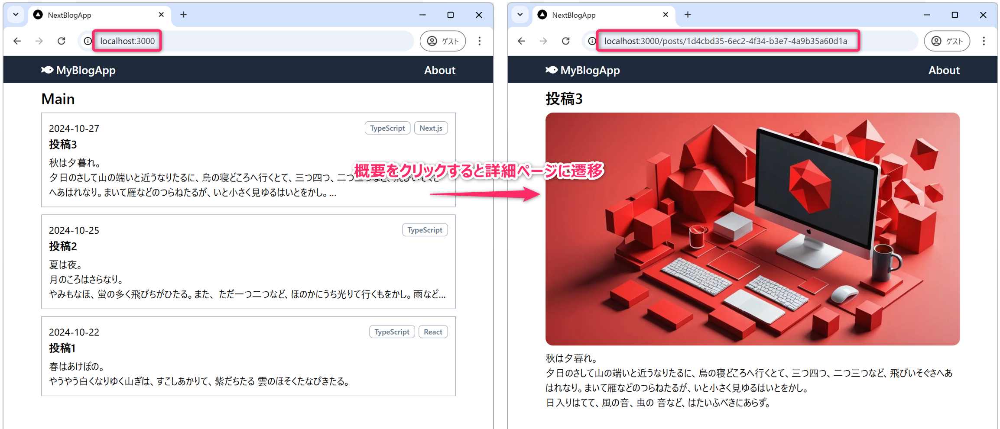
具体的には、/posts/[id]
というパスを使って、アクセスした記事に対応する「詳細
(全文)」と「カバーイメージ (画像)」を表示できるようにします。
ここで、[id] という少し特殊な表記に注目してください。Next.js
では、このように角括弧 [ ] で囲まれた部分を 動的セグメント
(Dynamic Segment) と呼び、URL の一部分を可変にするための仕組み
として利用します。
例えば、/posts/[id] の [id] には、次のように 投稿記事のID
(UUIDv4) が入ります。
- 投稿1
/posts/36b7c693-4cce-4d73-afa3-acb54a404290 - 投稿2
/posts/24f932b8-231b-429b-b9dc-569f07ba16a7 - 投稿3
/posts/1d4cbd35-6ec2-4f34-b3e7-4a9b35a60d1a
以上のように記事ごとに異なる URL を持ちながら、共通の仕組みで詳細ページを表示できる ような仕組みを実装していきます。
2.1 ハイパーリンクの追加
記事一覧から詳細ページに移動できるように、PostSummary.tsx
(前回講義で作成済み) の JSX において、以下の 第08行目 と
第14行目 のように、記事のタイトルや本文などのコンテンツを
<Link href={`/posts/${post.id}`}>...</Link> で
ラップ してください。
ここで「ラップ (wrap) する」とは、対象となる要素を別のコンポーネントで囲み、入れ子構造 (ネスト構造) にすることを意味します。
- Link コンポーネントは「文字列」だけではなく div要素 を「子要素」とすることもできます。そのようにすることで、その div 要素内の領域であれば、どこをクリックしてもハイパーリンクが機能するようにできます。
import Link from "next/link"; // ◀ 追加
// ...(省略)...
return (
<div className="border border-slate-400 p-3">
{/* 投稿日・カテゴリの表示 (前回の宿題の実装。各自のままで OK) */}
<Link href={`/posts/${post.id}`}> {/* ◀ 追加 */}
<div className="mb-1 text-lg font-semibold">{post.title}</div>
<div
className="line-clamp-3"
dangerouslySetInnerHTML={{ __html: safeHTML }}
/>
</Link> {/* ◀ 追加 */}
</div>
);PostSummary.tsx は、前回講義の 宿題 でレイアウトやデザインを各自でカスタマイズしてるはずなので、上記のサンプルコードとは違った内容 (もっと複雑な内容) になっていると思います。
- 上記のサンプルコードは 構造の参考 であり、コピーして上書きするものではないので注意してください。各自でタイトルや本文などの要素を囲むように Link コンポーネントを設定してください。
前回の宿題に取り組んでいない場合は、こちら の実装例をベースにして進めてください。
上記の変更ができたら、npm run dev
でアプリを立ち上げて、現時点でハイパーリンクが機能すること
(=記事概要をクリックするとブラウザのアドレスバーの「URLパス」が変化すること)
を確認してください。そして、現状のように、リンク先のコンテンツ ( posts/[id] )
が存在しない状態では、どのような画面が表示されるのかを確認してください。
- 開発では、こまめに部分的な動作確認を繰り返すこと が重要です。また、デベロッパーツールのコンソールタブから、エラーや警告が発生していないことを「定期的」に確認すること も大切です。
2.2 記事詳細ページの作成
リンク先のコンテンツ (= 記事詳細ページのコンテンツ) を作成していきます。
まずは、次のような構成となるようにプロジェクトにフォルダを追加してください。つまり、/src/app のなかに posts フォルダを作成して、さらに、そのなかに [id] フォルダを作成してください。前回講義でも解説したように Next.js では フォルダ構成が、そのまま「URLパス」に対応する仕組み となるため、フォルダの「名前設定」や「階層構造」には十分に注意を払ってください。
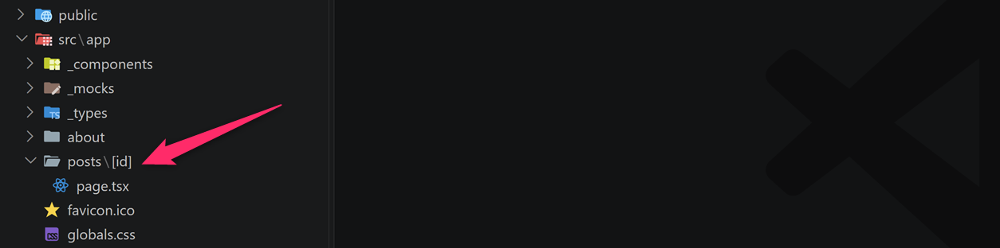
次に [id] フォルダのなかに page.tsx
というファイルを作成して、URLパスの [id] に対応した記事詳細を表示
(例えば、[id] が 36b7c693-4cce-4d73-afa3-acb54a404290 であれば
src_mocks.ts に基づき「投稿1」を表示)
するためのコードを記述してください。
"use client";
import { useState, useEffect } from "react";
import { useParams } from "next/navigation"; // ◀ 注目
import type { Post } from "@/app/_types/Post";
import dummyPosts from "@/app/_mocks/dummyPosts";
import { FontAwesomeIcon } from "@fortawesome/react-fontawesome";
import { faSpinner } from "@fortawesome/free-solid-svg-icons";
import Image from "next/image";
import DOMPurify from "isomorphic-dompurify";
// 投稿記事の詳細表示 /posts/[id]
const Page: React.FC = () => {
const [post, setPost] = useState<Post | null>(null);
const [isLoading, setIsLoading] = useState(true);
// 動的ルートパラメータから 記事id を取得 （URL:/posts/[id]）
const { id } = useParams() as { id: string };
// コンポーネントが読み込まれたときに「1回だけ」実行する処理
useEffect(() => {
// 本来はウェブAPIを叩いてデータを取得するが、まずはモックデータを使用
// (ネットからのデータ取得をシミュレートして１秒後にデータをセットする)
const timer = setTimeout(() => {
console.log("ウェブAPIからデータを取得しました (虚言)");
// dummyPosts から id に一致する投稿を取得してセット
setPost(dummyPosts.find((post) => post.id === id) || null);
setIsLoading(false);
}, 1000);
// データ取得の途中でページ遷移したときにタイマーを解除する処理
return () => clearTimeout(timer);
}, [id]);
// 投稿データの取得中は「Loading...」を表示
if (isLoading) {
return (
<div className="text-gray-500">
<FontAwesomeIcon icon={faSpinner} className="mr-1 animate-spin" />
Loading...
</div>
);
}
// 投稿データが取得できなかったらエラーメッセージを表示
if (!post) {
return <div>指定idの投稿の取得に失敗しました。</div>;
}
// HTMLコンテンツのサニタイズ
const safeHTML = DOMPurify.sanitize(post.content, {
ALLOWED_TAGS: ["b", "strong", "i", "em", "u", "br"],
});
return (
<main>
<div className="space-y-2">
<div className="mb-2 text-2xl font-bold">{post.title}</div>
<div>
<Image
src={post.coverImage.url}
alt="Example Image"
width={post.coverImage.width}
height={post.coverImage.height}
preload
className="rounded-xl"
/>
</div>
<div dangerouslySetInnerHTML={{ __html: safeHTML }} />
</div>
</main>
);
};
export default Page;現時点で /posts/xxxxx にアクセスすると、Runtime Error
(実行時エラー)
が発生しますが、これは想定どおりの動作です。このあと、next.config.ts
の設定変更などを行い、本セクションの最後まで進めると、記事詳細ページが正常に表示されるようになります。
ここで注目すべき処理は、
- 第19行目 の URLパス (動的ルートパラメータの
[id]の部分) から、具体的な値 (文字列) を取得する処理 - その
idに一致するブログ記事を、dummyPostsから探して 第15行目 で宣言している「状態 (state)」にセットする処理
…となります。
また、第16行目 の isLoading
は、ページを開いた時点ではデータの取得がまだ始まっていないので、初期値を true
にしています ( ここで false にすると、ページを開いた直後に一瞬だけ「指定
id の投稿の取得に失敗しました。」が表示されてしまいます)。
2.2.1 パラメータプレースホルダの処理
URL パスから id を取得する処理は、第03行目
でインポートしている useParams という Hook を利用して 第19行目
で行なっています。
なお、useParams は 2個以上のパラメータプレースホルダを持つケース にも対応しています。
例えば /posts/[categoryId]/[postId] となっているときは、次のように
categoryId と postId の値を取得することができます。
// src/app/posts/[categoryId]/[postId]/page.tsx
const { categoryId, postId } = useParams() as { categoryId: string; postId: string };パラメータプレースホルダに与えられる値が「数値」であっても、まずは「文字列」として取得してから
parseInt()などを使って「数値」に変換する必要
があります。
- ウェブアプリ開発の文脈で「パラメータプレースホルダ」とはなんですか。
- Next.js (React) における Hook (フック)
とは、どのような機能を持ったものを総称しているのですか。
useStateは実際に使用したことがあります。このあとuseParams(next/navigation) というものを使用する予定です。 - Next.js における
useParams(next/navigation) とは、どのような機能を持った Hook ですか。初学者向けに解説してください。
中級者向け
useSearchParams という Hook も存在します ( React Router
という別のライブラリには useLocation という Hook
もあります)。useParams との違いは生成 AI を使って解決してください。
- Next.js (App Router) を学習しています。useParams と useSearchParams の「違い」や「使い分け」について、URL の例を使って解説してください。また、React Router の useLocation は Next.js でも使用できるのか教えてください。
2.2.2 find メソッドによる検索
id と一致する記事の取得は、配列操作メソッドの find を使って
第28行目 で行なっています。
第03回講義 で学んだように
filter
は条件を満たす要素の「配列」を戻り値としていましたが、find
は条件を満たす 単一の要素
(配列の先頭からチェックして一番初めに条件を満たした単一の要素)
を戻り値とします。なお、条件に一致する要素が存在しなかったときは undefined
を返します。
ここでは、id に該当する記事が存在しないことを undefined
ではなく null を使って扱いたいので、次のようにしています。これにより
dummyPosts.find((post) => post.id === id) の結果が undefined
のとき、setPost(null) となります。
上記処理を、段階に分けて書けば以下のようなコードとなります。
const foundPost = dummyPosts.find((post) => post.id === id);
if (foundPost !== undefined) {
setPost(foundPost);
} else {
setPost(null);
}「null」と「undefined」の使い分けについて
null と undefined
は、条件式の内部で単体で評価すると同じ結果（falsyな値）になるなど同じような挙動を示すことがありますが、実際には
両者には様々な差異 があります。そして、慣れないうちは、実際問題として
null と undefined
の使い分けが難しい という場面が多々あります。
例えば 第15行目 では useState<Post | null>(null)
としていますが、これを useState<Post | undefined>(undefined)
としていない理由を説明しようとすると (理解して納得するためには)、TypeScript や Next.js、React
に関しての一定の知識と経験が必要となってきます。また、ここで undefined
を使ったとしても、実質的に動作上の問題もありません。
ただ、大まかには、次のように使い分けると良いと思います。
undefinedは 言語システムが自動的に設定する値 として考えるnullは 開発者が意図的に「値が存在しない」ことを表現したい場合 に使用する
両者の違いや、使い分けについては、時間があるときに生成AIを利用して (学習の段階に応じて) 徐々に理解を深めていってください。
2.2.3 不正な id を受け取ったときの処理
ウェブブラウザのアドレスバーに URL が直接入力された場合などは、不正な id を受け取ることがあります。第47行目 から 第49行目 は、そのような場合に対処する実装となります。
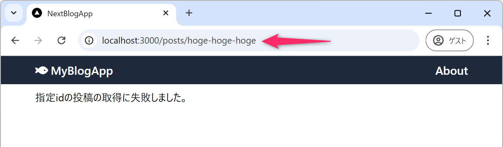
2.2.4 動作確認と画像取得に関する設定変更
src/app/posts/[id]/page.tsx を作成、保存したら開発モードで動作を確認してください。トップページの記事概要から詳細ページに移動すると、次のようなエラーが発生します。
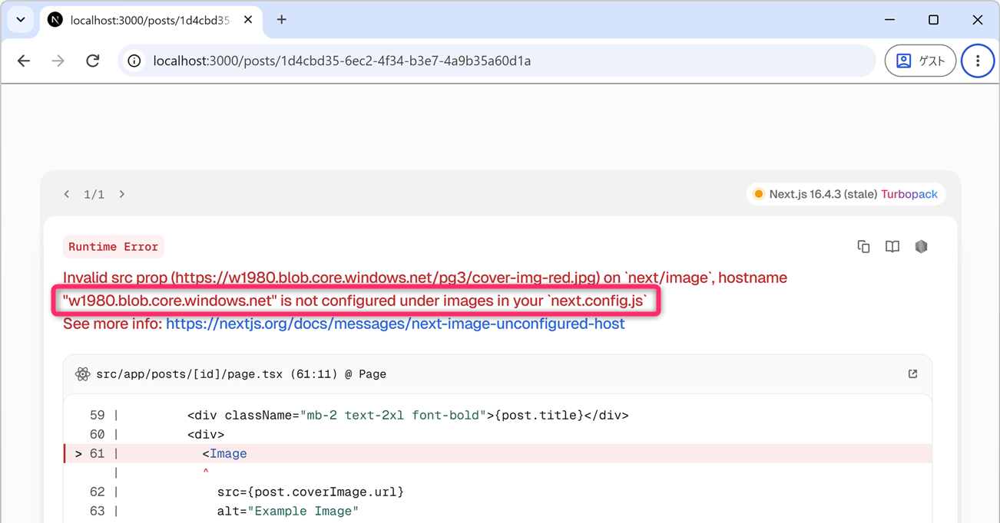
これは、エラーメッセージから読み取れるように (public フォルダなどのプロジェクト内部に配置した画像ではなく) 外部サイトから画像を取得して表示しようとしていること に起因します。Next.js のデフォルト設定では、「セキュリティ」と「パフォーマンス最適化」の観点から 外部からの画像の読込みが制限 されるようになっています。
- Next.js の Image コンポーネントで外部サイトの画像を表示しようとしたところ、next.config.ts に設定が必要というエラーになりました。外部からの画像の読込みがデフォルトで制限されているのは、セキュリティやパフォーマンスの観点から、どのような理由があるのですか。
外部からの画像の読込みを許可するためには、プロジェクトフォルダの直下に配置されている
next.config.ts を変更します。前回講義 で、placehold.jp と
avataaars.io を許可する設定を追加しました。ここでは、第21行目
のように、記事のカバーイメージが置かれている w1980.blob.core.windows.net を
remotePatterns に追加してください。
import type { NextConfig } from "next";
const nextConfig: NextConfig = {
cacheComponents: false,
devIndicators: false,
turbopack: {
rules: {
"*.css": {
loaders: ["@tailwindcss/turbopack"],
as: "*.css",
},
},
},
images: {
remotePatterns: [
{ protocol: "https", hostname: "placehold.jp" },
{
protocol: "https",
hostname: "avataaars.io",
},
{ protocol: "https", hostname: "w1980.blob.core.windows.net" }, // ◀ 追加
],
},
};
export default nextConfig;next.config.ts の変更後は、稀にホットリロードが効かないことがあります。そのときは、開発サーバを停止してから、再度、起動して動作を確認してください。今度は、記事詳細ページのなかで次のように画像が表示されるはずです。
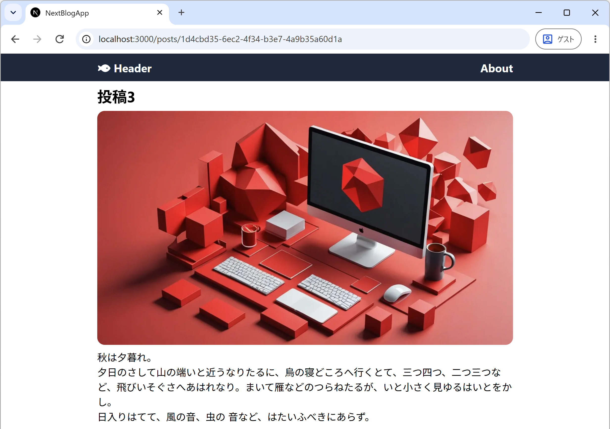
2.2.5 演習 (宿題: 30分)
記事詳細のページのなかに「投稿日」と「カテゴリ」の情報が表示されるように実装してください。またデザインなどをカスタマイズして、つくり込みをしてください。
3 ウェブから記事データを取得
ここまではモック ( src/app/_mocks/dummyPosts.ts ) からブログ記事のデータを取得して利用してきましたが、これを ウェブAPIを使ってバックエンドから取得できる ようにアップデートしていきます。
3.1 ウェブ API とは
まずは zipcloud が提供している 郵便番号検索API (=郵便番号から住所の取得が可能なウェブAPI) というウェブサービスを利用して、外部からデータを取得する処理 について学んでいきます。
現在、ウェブAPI (Web Application Programming Interface) の多くは HTTP/HTTPS を使って JSONフォーマット でデータを取得できるように設計・実装がされています。ここで利用する 郵便番号検索API についても、HTTPSでリクエストを送って「JSONフォーマット」で住所データが取得できるサービスになっています。
また、このあと利用する microCMS も、Next.js で実装するバックエンドも、そのような設計・実装になっています。
郵便番号検索API は、利用に際して HTTPヘッダに認証情報等を付加する必要がないので、ブラウザから直接利用することができます。Chromeのアドレスバーに次のURLを入力すると、以下のように「JSONフォーマット」のレスポンスを得ることができます。
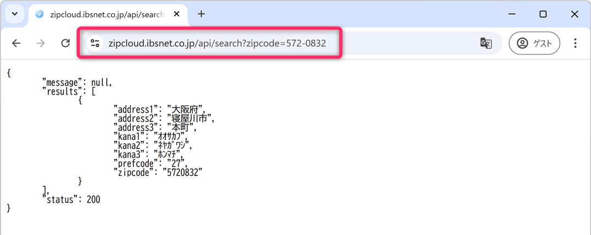
また、次のような 不正なリクエスト を送信すると、どのようなレスポンスが返ってくるかを把握してください。
- https://zipcloud.ibsnet.co.jp/api/search?zipcode=999-9999
- https://zipcloud.ibsnet.co.jp/api/search?zipcode=ABC
URL (URI) のなかで ? 以降の部分を クエリパラメータ (Query
Parameter) や「クエリ文字列 (Query
String)」と呼びます。クエリパラメータは、ウェブサーバーに対して追加のパラメータを送信するために使用され
パラメータ名=値 の形式で指定します。
2 個以上のパラメータを指定する場合は &
で区切ります。例えば、limit=5 というパラメータを追加したい場合は ?zipcode=999-9999&limit=5
のようにクエリパラメータを与えます。
URLエンコード
クエリパラメータには、日本語やスペース、記号などを含む文字列を指定したい場合があります。しかし、これらの文字をそのまま URL に埋め込むと、正しく解釈されないことがあります。そのため、必要に応じて URL エンコード (パーセントエンコード) と呼ばれる処理を行い、URL で安全に扱える形式に変換します。
例えば、半角スペースは %20、「大阪」は %E5%A4%A7%E9%98%AA
のようにエンコードされます。JavaScript では、組込み関数の
encodeURI() や
encodeURIComponent() を使用して URL
エンコードを行うことができます
(2つの関数の違いについては、生成AIを活用して調べてください)。
以下は、Google 検索に tbm=isch と q=大阪
という2つのクエリパラメータを指定した URL の例です。tbm=isch
は画像検索を指定するパラメータであり、q=大阪 の「大阪」の部分が URL
エンコードされています。
- JavaScript の
encodeURI()とencodeURIComponent()は、どちらも URL エンコードに使用する関数ですが、それぞれ、何が違うのでしょうか。「クエリパラメータの値をエンコードする場合は特に注意して」と言われたのですが、どういうことですか？
3.1.1 定着確認
- URL
https://zipcloud.ibsnet.co.jp/api/search?zipcode=572-0832において、「クエリパラメータ（クエリ文字列）」にあたる部分を答えよ。- 答え:
zipcode=572-0832（URL の?より後ろの部分）
- 答え:
- URL
https://example.com/items?category=book&limit=5に含まれるクエリパラメータについて、パラメータ名とその値の組をすべて答えよ。- 答え:
categoryの値がbook、limitの値が5。
- 答え:
- 1 つの URL に 2
個以上のクエリパラメータを指定するとき、パラメータどうしを区切るために使う記号を答えよ。
- 答え:
&（アンパサンド）。先頭のパラメータの前には?を付ける。
- 答え:
https://zipcloud.ibsnet.co.jp/api/search?zipcode=999-9999に、limit=5というクエリパラメータを追加した URL として、適切な選択肢を 1 つ選択せよ。- ①
https://zipcloud.ibsnet.co.jp/api/search?zipcode=999-9999?limit=5 - ②
https://zipcloud.ibsnet.co.jp/api/search?zipcode=999-9999&limit=5 - ③
https://zipcloud.ibsnet.co.jp/api/search?zipcode=999-9999,limit=5 - ④
https://zipcloud.ibsnet.co.jp/api/search&zipcode=999-9999&limit=5- 答え: ②。
?はクエリパラメータの先頭に 1 回だけ付け、2 個目以降は&でつなぐ。
- 答え: ②。
- ①
- URL
https://example.com/search?q=next&page=2について、説明として適切な選択肢を 1 つ選択せよ。- ① クエリパラメータは
qの 1 つだけで、その値はnext&page=2である。 - ② クエリパラメータは
qとpageの 2 つで、pageの値は2である。 - ③
?より前の部分https://example.com/searchがクエリ文字列である。 - ④ クエリパラメータは
searchとqの 2 つである。- 答え: ②。
&で区切られたq=nextとpage=2の 2 つのクエリパラメータである。
- 答え: ②。
- ① クエリパラメータは
- ウェブアプリにおいて、日本語やスペース、記号などの特殊文字を URL
で安全に扱える文字列に変換する処理のことを何というか答えよ。別名もあわせて答えること。
- 答え: 「URL エンコード」。「パーセントエンコード」とも呼ばれる。
- クエリパラメータの値に半角スペースを含めたいとき、URL
エンコードするとスペースはどのような文字列になるか答えよ。
- 答え:
%20
- 答え:
- URL
https://www.google.com/search?tbm=isch&q=%E5%A4%A7%E9%98%AAに含まれるクエリパラメータの名前をすべて答えよ。ただし、%E5%A4%A7%E9%98%AAは、日本語の「大阪」を URL エンコードしたものである。- 答え:
tbmとq。qの値が URL エンコードされた「大阪」である。
- 答え:
- JavaScript で、日本語を含む文字列をクエリパラメータの値として URL に組み込むために、URL
エンコードを行う組込み関数の名前を 1 つ答えよ。
- 答え:
encodeURIComponent()（またはencodeURI()）。値の部分には、&や=などの記号もエンコードするencodeURIComponent()を使うことが一般的である。
- 答え:
- 「URL エンコードは、URL
に含まれるデータを暗号化して、第三者に読まれないようにするための処理である。」という説明は適切か、不適切か。
- 答え: 不適切。URL エンコードは暗号化ではなく、特殊文字を URL で安全に扱える形式に置き換えるだけの処理である。元の文字列に戻す (デコードする) こともできる。
- 「クエリパラメータの値に
&を含む文字列を、URL エンコードせずにそのまま埋め込んでも、パラメータの区切りとは区別されるので問題ない。」という説明は適切か、不適切か。- 答え: 不適切。
&は次のクエリパラメータとの区切りとして解釈されてしまう。値に含めたいときは URL エンコード (%26) する必要がある。
- 答え: 不適切。
3.2 郵便番号検索 API の組込み
Next.js のコンポーネントのなかで、郵便番号検索API にリクエストを送って、そのレスポンスとして得られる「JSONデータ」に基づいてコンテンツを構築する仕組みを実装していきます。
具体的には http://localhost:3000/playground/zip-code/572-0832
というパスにアクセスしたとき、次のような画面が表示されるように設計・実装していきます。
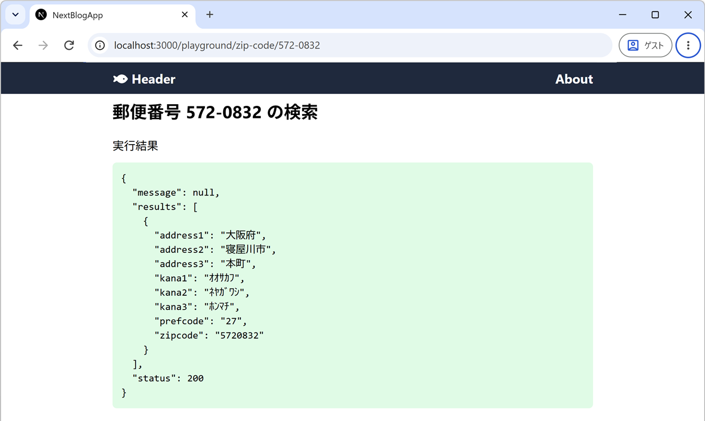
まずは src/app に playground というフォルダを作成して、そこに zip-code というサブフォルダを作成してください。さらに zip-code のなかに [code] というフォルダを作成して、そこに page.tsx を作成してください。
📂 src/app/
└─ 📂 playground/
└─ 📂 zip-code/
└─ 📂 [code]/
└─ page.tsxpage.tsx には、以下のコードを記述してください。
"use client";
import { useState, useEffect } from "react";
import { useParams } from "next/navigation";
const Page: React.FC = () => {
const endpoint = "https://zipcloud.ibsnet.co.jp/api/search";
const { code } = useParams() as { code: string };
const [response, setResponse] = useState<string>("APIからデータを取得中...");
useEffect(() => {
const fetchAddressFromZipCode = async () => {
// ウェブAPIにGETリクエストを送信してレスポンスを取得
const requestUrl = `${endpoint}?zipcode=${code}`;
const response = await fetch(requestUrl, {
// ▲ 注目
method: "GET",
cache: "no-store", // キャッシュを利用しない
});
console.log("ウェブAPIからデータを取得しました");
// レスポンスからJSON形式でデータ取得して整形して表示
const parsedData = await response.json(); // ◀◀ 注目
setResponse(JSON.stringify(parsedData, null, 2));
};
fetchAddressFromZipCode(); // 関数を実行
}, [code]);
return (
<main>
<div className="mb-5 text-2xl font-bold">{`郵便番号 ${code} の検索`}</div>
<div className="space-y-3">
<div>実行結果</div>
<pre className="rounded-md bg-green-100 p-3 text-sm">{response}</pre>
</div>
</main>
);
};
export default Page;はじめに開発モードで起動して、http://localhost:3000/playground/zip-code/572-0832
にアクセスして、意図したように機能することを確認してください。
このコードのなかで注目すべき箇所は 第10行目 から 第27行目
にかけての useEffect の処理になります。
メインとなるデータ取得の処理は useEffect(() => {...},[code])
のなかに記述されており、Pageコンポーネントが読み込まれたとき
(マウントされたとき) と、code が変更されたとき
だけ、APIからのデータ取得が実行されるようになっています。
useEffect の内部では、第11行目 から 第24行目
にかけて fetchAddressFromZipCode がアロー関数形式で定義され、それが
第26行目 で呼び出されています。fetchAddressFromZipCode
の内部では async と await という「非同期処理」を取り扱うためのキーワード が使用されています
(非同期処理の詳細は次のセクションで解説します)。そして、ウェブAPIからデータを取得するメイン処理は
第14行目 の fetch という組み込み関数で行なわれています。
「fetch」とは、ウェブアプリの文脈では データを外部から取得する
や リモートのリソースを読み込んでくる という意味になります。関数
fetch の 第1引数 にはウェブAPI の URL
(エンドポイントとも呼ばれます) を与え、第2引数
にはリクエストのオプション設定を与えます。
なお、第34行目 の <pre>...</pre>
は、Preformatted Text (整形済みテキスト)
のためのタグで、タグに囲まれた子要素の内容を 「スペース」や「改行」などをそのままに、等幅フォントで
出力する機能を持ちます。
3.2.1 演習 (5分)
第34行目 の <pre> タグを以下のように
<div>
タグに書き換えて、画面表示がどのように変化するか確認してください。
4 同期処理と非同期処理
ここでは、「同期処理」と「非同期処理」の基本的な考え方について学びます。
注意: ここでは、正確性・厳密性よりも分かりやすさを優先し、一部の説明を簡略化しています。より詳しい仕組みについては、ウェブや生成AIを活用して理解を深めてください。
アプリ開発における「同期処理」と「非同期処理」は、ある処理の完了を待ってから次の処理に進むかどうか という、プログラムの実行を制御する方式に関する用語です。ざっくりと言えば、同期処理は「前の処理の完了を待ってから次に進む方式」、非同期処理は 「前の処理の完了を待たずに次に進める方式」 になります。
例えば、次のような順序でプログラムが書かれているとします。
関数1();
関数2();
関数3();同期処理 (Synchronous Processing) では、関数1() から
関数3() までを ひとつずつ順番に実行
します。つまり、関数1() の 完了を待ってから 関数2()
を実行し、さらに 関数2() の 完了を待ってから
関数3() を実行します。JavaScript や Python
などでは、通常の関数呼び出しは基本的にこのような「同期的な動作」になります。
一方、非同期処理 (Asynchronous Processing) では、ある処理の
完了を待たずに 次の処理に進むことができます。例えば、関数1()
が時間のかかる処理を開始したあと、その完了を待たずに
関数2() や 関数3() を実行し、関数1()
の処理結果は、完了した時点で受け取るような制御が可能になります。
4.0.1 定着確認
次の文の空欄に入る語を漢字 2 文字で答えよ。
- アプリ開発における同期処理とは、ある処理の（ ）を待ってから、次の処理に進む制御方式のことである。
- 答え: 完了
ソフトウェアにおける「非同期処理」の説明として、適切な選択肢を 1 つ選択せよ。
- ある処理の完了を待ってから、次の処理に進む。
- ある処理の完了を待たずに、次の処理に進むことができる。
- 複数のコンピュータで、すべての処理を同時に実行する。
- 処理の実行順序を、実行のたびにランダムに決める。
- 答え: ②。①は同期処理の説明である。
同期処理と非同期処理を、それぞれ英語で答えよ。
- 答え: 同期処理は Synchronous Processing、非同期処理は Asynchronous Processing。
次のプログラムが、すべて同期的に実行されるものとする。このとき、
関数2()が実行されるタイミングとして、適切な選択肢を 1 つ選択せよ。関数1(); 関数2(); 関数3();関数1()の完了を待たずに、同時に実行される。関数1()の完了を待ってから実行される。関数3()の完了後に実行される。- 実行されない。
- 答え: 2。同期処理では、前の処理の完了を待ってから次の処理に進む。
次のプログラムで、時間のかかる処理を行う
重い処理()が同期的に実行されるとき、「B」が出力されるタイミングとして、適切な選択肢を 1 つ選択せよ。console.log("A"); 重い処理(); console.log("B");- 「A」と同時に出力される。
重い処理()の完了前に出力される。重い処理()の完了後に出力される。- 出力されない。
- 答え: 3。同期処理なので、
重い処理()の完了を待ってから「B」が出力される。
- 答え: 3。同期処理なので、
「非同期処理では、ある処理が完了するまで、次の処理は一切実行できない。」という説明は「適切である」か「不適切である」か答えよ。
- 答え: 不適切である。非同期処理では、ある処理の完了を待たずに次の処理に進むことができる。
「JavaScript や Python などでは、通常の関数呼び出しは基本的に同期的な動作になる。」という説明は「適切である」か「不適切である」か答えよ。
- 答え: 適切である。通常の関数呼び出しでは、呼び出した関数の完了を待ってから次の処理に進む。
「同期処理と非同期処理の違いは、プログラムを実行するコンピュータの性能の違いである。」という説明は「適切である」か「不適切である」か答えよ。
- 答え: 不適切である。両者の違いは、処理の完了を待ってから次に進むかどうかという、プログラムの実行を制御する方式の違いである。
非同期処理で、先に開始した時間のかかる処理の結果を受け取るタイミングとして、適切な選択肢を 1 つ選択せよ。
- 処理を開始した直後に、必ず受け取る。
- その処理が完了した時点で受け取る。
- 最後の処理が終わるまで、受け取ることはできない。
- 処理の結果は、受け取ることができない。
- 答え: 2。処理の完了を待たずに先へ進み、結果は完了した時点で受け取る。
4.1 同期処理の動作確認
まずは、同期処理が実際にどのように動作するのかを、簡単な実験を通じて確認していきます。ブログアプリのプロジェクトフォルダ内に、次のような実験用ファイルを作成してください。
"use client";
import { cn } from "cn";
import { FontAwesomeIcon } from "@fortawesome/react-fontawesome";
import { faGear } from "@fortawesome/free-solid-svg-icons";
const syncTask = (name: string) => {
// なんらかの処理が実行されると仮定
console.log(`同期処理 ${name} が完了しました`);
};
const Page: React.FC = () => {
const syncProcess = () => {
console.log("関数 syncProcess を開始");
syncTask("処理1");
syncTask("処理2");
syncTask("処理3");
console.log("関数 syncProcess の最後に到達");
};
return (
<main>
<div className="mb-5 text-2xl font-bold">
同期処理を理解するための実験1
</div>
<div className="space-y-3">
<button
type="button"
onClick={syncProcess}
className={cn(
"cursor-pointer rounded-md px-3 py-1",
"bg-indigo-500 font-bold text-white hover:bg-indigo-600",
)}
>
同期処理の実行
</button>
<div className="flex justify-items-start space-x-2">
<div>
<FontAwesomeIcon
icon={faGear}
className="animate-spin text-2xl [animation-duration:2s]"
/>
</div>
{[1, 2, 3].map((i) => (
<div key={i}>
<input
id={`cb-${i}`}
type="checkbox"
className="mr-1"
defaultChecked={i === 1}
/>
<label htmlFor={`cb-${i}`} className="font-bold">
項目{i}
</label>
</div>
))}
</div>
</div>
</main>
);
};
export default Page;上記のプログラムでは、syncTask()
が呼び出されると、その処理が完了してから次の処理に進むようになっています。つまり、同期処理によって順番に実行されるプログラムとなっています。
まずは、開発モードでサーバを起動し、/playground/sync
にアクセスして、次のようなコンテンツが表示されることを確認してください。
つづいて、画面内の「同期処理の実行」ボタンを押したとき
(つまり、第28行目 の設定によって関数 syncProcess()
が呼び出されたとき)、デベロッパーツールのコンソールに どのようなログが、どのような順序で出力されるのか
を予測してみてください。今回は同期処理なので、難しく考えず、プログラムの記述順序に沿って素直に考えてみてください。
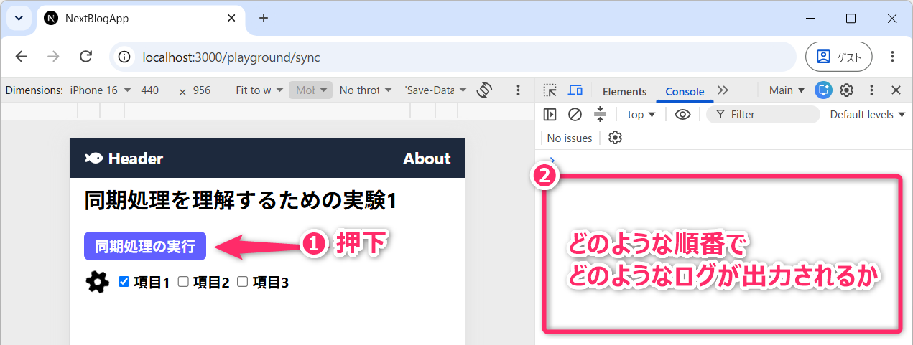
コンソールに出力されるログについて予測ができたら、実際に「同期処理の実行」のボタンを押下して、結果を確認してみてください。次のようなログが出力されたはずです。
関数 syncProcess を開始
同期処理 処理1 が完了しました
同期処理 処理2 が完了しました
同期処理 処理3 が完了しました
関数 syncProcess の最後に到達予測したとおり、各処理はプログラムの 第13行目から第17行目
に記述された順番どおりに実行され、ログが出力されていることが分かります。具体的には、syncTask("処理1")
の 完了を待ってから syncTask("処理2") が実行され、さらに
syncTask("処理2") の 完了を待ってから
syncTask("処理3") が実行されていることが確認できます。
ところで、これは見方を変えれば、syncTask("処理1") の実行中は、後続の
syncTask("処理2") に 処理を進めることができない状態
と考えることができます。
このように、ある処理の完了を待つことで、後続の処理に進めなくなることを ブロッキング (Blocking)
と呼びます。今回の例では、syncTask("処理1") が実行されている間、呼び出し元の
syncProcess() は次の処理に進むことができません。
この状態を、syncTask("処理1")
が、後続の処理の実行を「ブロックしている」と表現します。
4.2 処理時間を要するタスクを同期処理で扱うときの問題
次に、src/app/playground/sync/page.tsx
を以下のように書き換えてみてください。第11行目 で定義している
heavySyncTask は、処理時間を要するタスク
(実行完了までに時間のかかるタスク) を疑似的に再現するための関数です。
フロントエンド開発における「処理時間を要するタスク」の具体例としては、大量のデータを対象とした計算処理 や、複雑な DOM 操作などが挙げられます。
ウェブ API からのデータ取得なども、結果を得るまでに時間を要する処理の一例ですが、こちらは通常、非同期処理として扱われます。
page.tsx を書き換えたら、先ほどと同様に「同期処理の実行」ボタンを押したとき、どのようなログがコンソールに出力されるのかを予測してください。その後、実際に実行してみてください。
"use client";
import { cn } from "cn";
import { FontAwesomeIcon } from "@fortawesome/react-fontawesome";
import { faGear } from "@fortawesome/free-solid-svg-icons";
const syncTask = (name: string) => {
// なんらかの処理が実行されると仮定
console.log(`同期処理 ${name} が完了しました`);
};
const heavySyncTask = (workload: number) => {
// なんらかの重たい処理が実行されると仮定
const startTime = Date.now();
while (Date.now() - startTime < workload) {}
const ret = Math.floor(Math.random() * 10);
console.log("同期処理 heavySyncTask が完了しました");
return ret;
};
const Page: React.FC = () => {
const syncProcess = () => {
console.log("関数 syncProcess を開始");
syncTask("処理1");
heavySyncTask(2000); // 実行完了に2000msかかる処理
syncTask("処理2");
syncTask("処理3");
console.log("関数 syncProcess の最後に到達");
};
// 以下、変更なし コンソールには (予測したとおり) 次のようなログが出力されたはずです。しかし、コンソールの出力とは別に、画面上でもある変化が起きていたことに気づいたと思います。もし気づかなかった場合は、もう一度「同期処理の実行」ボタンを押して、画面の様子を注意深く観察してみてください。
関数 syncProcess を開始
同期処理 処理1 が完了しました
同期処理 heavySyncTask が完了しました
同期処理 処理2 が完了しました
同期処理 処理3 が完了しました
関数 syncProcess の最後に到達処理時間を要するタスクが実行されると、画面内の歯車マークの CSS
アニメーションが一時的に停止すること
に気づけたでしょうか。そして、約2秒後に「関数 syncProcess
の最後に到達」というログが出力される頃には、アニメーションが再開されているはずです。つまり、syncProcess
の実行が完了するまではアニメーションが停止してしまうという問題が生じます。
これは、heavySyncTask の実行中、JavaScript
のメインスレッドが占有され、ブラウザが画面の描画を更新できなくなるためです。その結果、syncProcess
の 実行が完了するまで、アニメーションの更新が妨げられてしまいます。
さらに、もうひとつ確認してみてください。syncProcess の
実行中にチェックボックスをクリックしても、すぐには反応しないことが分かるはずです。これは、JavaScript
のメインスレッドが占有されている間は、クリックなどのユーザ操作に対する処理も実行できなくなるためです。
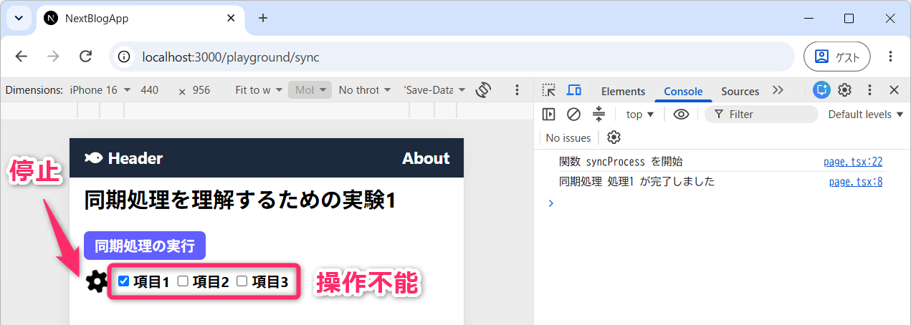
このように、処理時間の長いタスクを同期的に実行すると、画面が一時的にフリーズしたような状態になり、ユーザ操作への応答が妨げられることがあります。こうした現象は、ユーザ体験 (UX) を大きく損なう原因となります。
4.3 同期処理で問題が起こる原因
なぜ「このようなことが起きるのか」について紐解いていきます。
ウェブブラウザで実行される JavaScript は、開発者が記述したプログラムの実行 (例えば
syncProcess など) に加えて、次のような処理にも関わっています。
- DOM イベント (クリックやスクロールなどのユーザ操作) に対する応答
- レンダリング処理 (画面の描画や更新、CSS アニメーションなど)
これらの処理の多くは、メインスレッド (UI スレッドとも呼ばれる) という 単一のスレッド 上で実行されます。メインスレッドでは、JavaScript の処理と画面の更新などを適切なタイミングで切り替えながら実行しています。
そのため、heavySyncTask
のような実行時間の長いタスクがメインスレッドを占有すると、先ほど確認したように、アニメーションの更新やユーザ操作
(チェックボックスのクリックなど) に対する応答が妨げられることになります。
このようなブロッキングは、実際には短時間の同期処理でも発生しています。しかし、処理が数ミリ秒程度で完了する場合は、その影響が小さいため、通常はユーザが気づくことはありません。
一方、実行に時間のかかる処理を同期的に実行すると、画面の更新やユーザ操作への応答が長時間ブロックされ、ユーザ体験 (UX) を大きく損なうことになってしまいます。
このような問題を避けるため、JavaScript では、HTTP リクエストを実行する標準
API として、非同期的に動作する fetch()
が提供されています。fetch() はネットワーク通信の完了を待つ間も、JavaScript
のメインスレッドを占有し続けることがないため、他の処理を進めることができます。
なお、fetch() には同期的に通信を実行するための機能は用意されていません。
プログラミングの脱初心者を目指していますが、「同期処理」と「非同期処理」の違いがいまひとつ理解できていません。レストランで注文を受けて料理を提供する場面など、身近な例にたとえながら、それぞれの仕組みや違いをわかりやすく説明してください。
JavaScript で、一定時間
whileループを繰り返す処理時間の長い関数を同期的に呼び出すと、その間、ブラウザの画面がフリーズしたような状態になるのはなぜでしょうか。「関数の完了を待つこと」と「画面の更新やユーザ操作への応答が妨げられること」 がどのように関係しているのか、JavaScript のメインスレッドの仕組みを踏まえて、順を追ってわかりやすく説明してください。
JavaScript は単一のスレッドで動くと学びました。それなのに、setTimeout() や fetch() では、処理の完了を待つ間にほかの処理を進められるのはなぜですか。タイマーや通信を実際に担当しているのは誰なのか、ブラウザと JavaScript エンジンの役割の違いも含めて、初心者にも分かるように説明してください。あわせて、「単一スレッド」や「非同期」という言葉から初心者が誤解しやすい点と、Python や C など他の言語との違いも教えてください。
Web Worker というものを使用すると、JavaScript の重い計算処理をメインスレッドとは別のスレッドで実行できると聞きました。通常の非同期処理 (
async/awaitなど) とは何が違い、どのような場面で Web Worker を使用するのが効果的なのでしょうか。また、Next.js (React) のアプリでも利用できるのか、具体的な実装例や利用する際の制約・注意点も含めて説明してください。
4.4 非同期処理
ここまでの実験では、処理時間の長い計算を同期的に実行すると、JavaScript のメインスレッドが占有され、画面の更新やユーザ操作への応答が妨げられることを確認しました。
一方、ウェブアプリでは インターネットを通じてデータを取得する処理 など、CPU が計算を続けているわけではなく、外部からの応答を待つために時間がかかる処理 も存在します。こうした処理では、非同期処理 を利用することで、結果を待っている間もメインスレッドを占有せず、別の処理を進めることができます。
ここでは、setTimeout() を使って 2秒間の待ち時間を疑似的に再現
し、非同期処理の動作を確認してみます。なお、今回の実験は、先ほどの
heavySyncTask() のような 重い計算処理を非同期化するものではない
ことに注意してください。
まずは、新規に src/app/playground/async/page.tsx を作成して、以下のコードを記述してください。
全体構造は先ほどの同期処理とほぼ同じですが、第11行目 で定義している
delayedAsyncTask は、async キーワードが付けられた 非同期関数 となっています。この関数では、第12行目 の
await と setTimeout()
を使って、指定された時間が経過するまで非同期的に待機するようになっています。
"use client";
import { cn } from "cn";
import { FontAwesomeIcon } from "@fortawesome/react-fontawesome";
import { faGear } from "@fortawesome/free-solid-svg-icons";
const syncTask = (name: string) => {
// なんらかの処理が実行されると仮定
console.log(`同期処理 ${name} が完了しました`);
};
const delayedAsyncTask = async (delay: number) => {
await new Promise((resolve) => setTimeout(resolve, delay));
const ret = Math.floor(Math.random() * 10);
console.log("非同期処理 delayedAsyncTask が完了しました");
return ret;
};
const Page: React.FC = () => {
const asyncProcess = () => {
console.log("関数 asyncProcess を開始");
syncTask("処理1");
delayedAsyncTask(2000); // 約2秒後に完了する非同期処理
syncTask("処理2");
syncTask("処理3");
console.log("関数 asyncProcess の最後に到達");
};
return (
<main>
<div className="mb-5 text-2xl font-bold">
非同期処理を理解するための実験1
</div>
<div className="space-y-3">
<button
type="button"
onClick={asyncProcess}
className={cn(
"cursor-pointer rounded-md px-3 py-1",
"bg-indigo-500 font-bold text-white hover:bg-indigo-600",
)}
>
非同期処理の実行
</button>
<div className="flex justify-items-start space-x-2">
<div>
<FontAwesomeIcon
icon={faGear}
className="animate-spin text-2xl [animation-duration:2s]"
/>
</div>
{[1, 2, 3].map((i) => (
<div key={i}>
<input
id={`cb-${i}`}
type="checkbox"
className="mr-1"
defaultChecked={i === 1}
/>
<label htmlFor={`cb-${i}`} className="font-bold">
項目{i}
</label>
</div>
))}
</div>
</div>
</main>
);
};
export default Page;/playground/async
にアクセスして、「非同期処理の実行」ボタンを押したとき、デベロッパーツールのコンソールに
どのようなログが、どのような順序で出力されるのか
を予測してみてください。
- 特に、
delayedAsyncTask(2000)が呼び出されたあと、その処理の完了を待たずに後続の処理が実行されるかどうか に注目してください。
予測ができたら、実際にボタンを押して結果を確認してください。コンソールには、次のようなログが出力されたはずです。
関数 asyncProcess を開始
同期処理 処理1 が完了しました
同期処理 処理2 が完了しました
同期処理 処理3 が完了しました
関数 asyncProcess の最後に到達
非同期処理 delayedAsyncTask が完了しました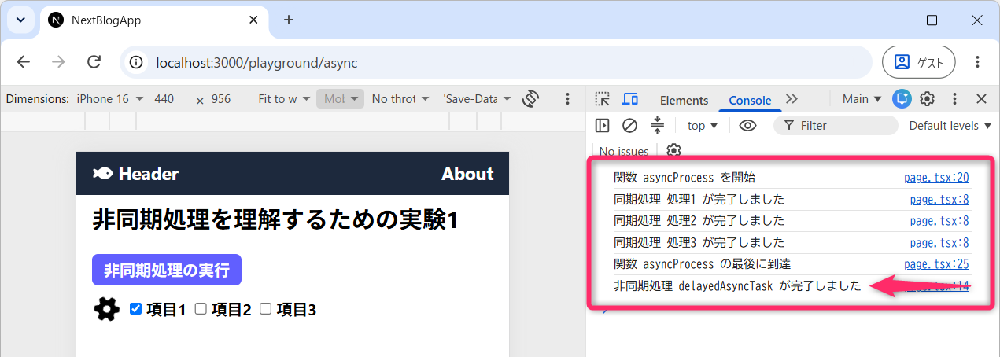
ここで注目してほしいのは、非同期関数 delayedAsyncTask(2000) の
完了を待たずに、後続の syncTask("処理2") と
syncTask("処理3") が実行されていることです。そして、「非同期処理 delayedAsyncTask
が完了しました」というログは、呼び出し元の asyncProcess()
の実行が終了したあと、約2秒後に出力されています。
また、同期処理の実験とは異なり、待機中も歯車のアニメーションが継続し、チェックボックスの操作にも応答すること を確認してください。
これは、delayedAsyncTask() が setTimeout()
による待機を行っている間、JavaScript
のメインスレッドを占有し続けることがないためです。つまり、非同期処理の完了を待っている間も、メインスレッドでは別の処理を実行できる
ということになります。
今回の setTimeout()
は、指定された時間が経過したあとに処理を実行するための仕組みです。指定された時間だけ
CPU を使って計算を続けるわけではありません。
また、setTimeout()
で指定した時間は、処理を実行するまでの最小限の待ち時間の目安であり、正確にその時間が経過した瞬間に処理が実行されることを保証するものではありません。
ところで、delayedAsyncTask()
の結果に基づいた後続処理を実行したいときには、どうすればよいでしょうか。
例えば、delayedAsyncTask() の戻り値を syncTask("処理3")
に渡したい場合を考えてみてください。現状のプログラムでは、delayedAsyncTask()
の完了を待たずに syncTask("処理3")
が実行されてしまうため、そのままでは結果を利用することができません。
このような場合に利用するのが、await キーワード です。
4.4.1 定着確認
次の文の空欄に入る語を漢字で答えよ。
- ウェブアプリで、インターネットを通じたデータ取得のように、外部からの応答を待つために時間がかかる処理は、（ ）処理を利用することで、結果を待つ間もメインスレッドを占有せずに、別の処理を進めることができる。
- 答え: 非同期
関数を、結果を待つ間も他の処理を進められる「非同期関数」として定義するときに、関数の前に付けるキーワードを答えよ。
- 答え:
async
- 答え:
次のプログラムで、
delayedAsyncTask(2000)は、完了までに 2 秒かかる非同期関数であり、完了したときに「C」を出力する。この関数をawaitを付けずに呼び出したとき、コンソールに出力される順序として、適切な選択肢を 1 つ選択せよ。console.log("A"); delayedAsyncTask(2000); console.log("B");- A → B → C
- A → C → B
- C → A → B
- B → A → C
- 答え: 1。
delayedAsyncTask(2000)の完了を待たずに「B」が出力され、約 2 秒後に「C」が出力される。
- 答え: 1。
今回の実験で
setTimeout()を使って疑似的に再現している処理として、適切な選択肢を 1 つ選択せよ。- CPU が計算を続けるために、時間がかかる重い計算処理。
- 例外が発生して、処理が中断される状況。
- 外部からの応答を待つために、時間がかかる処理。
- 画面の描画が更新される処理。
- 答え: 3。今回の実験は、重い計算処理を非同期化するものではない。
「
setTimeout()に 2000 を指定すると、その 2 秒間は CPU が計算を続けて、メインスレッドを占有する。」という説明は「適切である」か「不適切である」か答えよ。- 答え: 不適切である。指定した時間が経過したあとに処理を実行するための仕組みであり、その間 CPU が計算を続けるわけではない。
「非同期処理の完了を待っている間も、メインスレッドでは別の処理を実行できるので、画面のアニメーションやチェックボックスの操作にも応答できる。」という説明は「適切である」か「不適切である」か答えよ。
- 答え: 適切である。
「
setTimeout()で指定した時間が経過した瞬間に、処理が正確に実行されることが保証されている。」という説明は「適切である」か「不適切である」か答えよ。- 答え: 不適切である。指定した時間は、処理を実行するまでの最小限の待ち時間の目安であり、正確にその時間に実行されることを保証するものではない。
4.5 await を用いた非同期処理の完了待機
非同期関数 delayedAsyncTask() の完了を待ち、その戻り値を受け取ってから
syncTask("処理3") を実行したい場合は、次のように async と
await キーワードを使用して asyncProcess() を書き換えます。
const Page: React.FC = () => {
const asyncProcess = async () => {
// ▲ async キーワードの追加
console.log("関数 asyncProcess を開始");
syncTask("処理1");
const asyncTask = delayedAsyncTask(2000); // ◀ 変更
syncTask("処理2");
const num = await asyncTask; // ◀ 変更
syncTask(`処理3 num=${num}`); // ◀ 変更
console.log("関数 asyncProcess の最後に到達");
};まずは、実行結果を確認してください。コンソールには、次のようなログが出力されるはずです。
関数 asyncProcess を開始
同期処理 処理1 が完了しました
同期処理 処理2 が完了しました
非同期処理 delayedAsyncTask が完了しました
同期処理 処理3 num=1 が完了しました
関数 asyncProcess の最後に到達※ num の値はランダムに生成されるため、実行するたびに異なります。
この結果から、syncTask("処理2") は delayedAsyncTask()
の完了を待たずに実行される一方で、syncTask("処理3") は delayedAsyncTask() の完了を待ってから実行される
ことが確認できます。
ここで注目してほしいのが、第25行目 の await
キーワードです。
delayedAsyncTask() は非同期関数であるため、呼び出すと Promise
(非同期処理の結果を表すオブジェクト) を返します。今回のコードでは、その Promise を変数
asyncTask に格納しています。そして、await を使用することで、Promise
が表す非同期処理の完了を待ち、その結果を受け取ることができます。
このとき、await によって一時停止するのは、現在実行している非同期関数
(今回の場合は asyncProcess ) の後続処理 です。JavaScript
のメインスレッド全体が停止するわけではありません。
そのため、await
による待機中も、画面の更新やユーザ操作への応答を継続できます。実際に、歯車のアニメーションやチェックボックスの操作がブロックされないことも確認してください。
なお、syncTask("処理2") についても、delayedAsyncTask()
の完了を待ってから実行したい場合は、次のように記述することができます。
const Page: React.FC = () => {
const asyncProcess = async () => { // ◀ async キーワードの追加
console.log("関数 asyncProcess を開始");
syncTask("処理1");
const num = await delayedAsyncTask(2000); // ◀ 変更
syncTask(`処理2 num=${num}`); // ◀ 変更
syncTask(`処理3 num=${num}`); // ◀ 変更
console.log("関数 asyncProcess の最後に到達");
};
// 以下、変更なしこの場合は、delayedAsyncTask()
の完了を待ってから、syncTask("処理2") と syncTask("処理3")
が順番に実行されます。
つまり、await をどこに記述するかによって 非同期処理の完了を待つタイミングを制御できる
ということがポイントになります。
中級者向け:「非同期処理」と「重い計算処理」の違いについて
今回の実験では、setTimeout()
を使って、処理結果が得られるまでの待ち時間を疑似的に再現しました。
ただし、async や await を使用するだけで、CPU
による重い計算処理が自動的に別スレッドで実行されるわけではありません。
例えば、前半で使用した heavySyncTask() を、そのまま async
キーワードの付いた関数に変更しても、計算処理がメインスレッドを占有するという問題は解消されません。
- 重い計算処理をメインスレッドとは別のスレッドで実行したい場合には、Web Worker などの仕組みを利用します。なお、今回は非同期処理の基本的な考え方を理解することが目的なので、Web Worker の詳しい仕組みについては扱いません。
4.5.1 演習 (10分)
今回のように、関数の内部で await を使用するためには、その関数に
async キーワードを付ける必要があります。第19行目 の
async キーワードを削除すると、どのようなエラーが発生するか確認してください。
4.6 改めて郵便番号検索APIの利用処理を確認
非同期処理について概要が理解できたところで、郵便番号検索APIからデータを取得する処理 について改めてプログラムを確認していきます。
useEffect(() => {
const fetchAddressFromZipCode = async () => {
// ウェブAPIにGETリクエストを送信してレスポンスを取得
const requestUrl = `${endpoint}?zipcode=${code}`;
const response = await fetch(requestUrl, {
// ▲▲ 注目
method: "GET",
cache: "no-store", // キャッシュを利用しない
});
console.log("ウェブAPIからデータを取得しました");
// レスポンスからJSON形式でデータ取得して整形して表示
const parsedData = await response.json(); // ◀◀ 注目
setResponse(JSON.stringify(parsedData, null, 2));
};
fetchAddressFromZipCode(); // 関数を実行
}, [code]);第11行目 で
asyncキーワードを付けているのは、その内部でawaitを使用するためです。第14行目 で
await fetch (...)としているのはfetchが「非同期処理」であり、なおかつ、その完了を待ってから 第19行目 を実行したいためです。第22行目 で
await response.json()としているのは、json()メソッドが「非同期処理」で実装されており、その完了を待って (=その「戻り値」を使って) 後続のsetResponseを実行したいため です。
なお、json() メソッドは
HTTP/HTTPSレスポンスのボディ部がJSONフォーマットであることを前提にオブジェクトへの変換を行います。関数やメソッドが「非同期処理かどうか」は、VSCodeのエディタ上でカーソルをあわせて表示されるツールチップで、その関数/メソッドの「戻り値」が
Promise<...> であるかで判断できます。
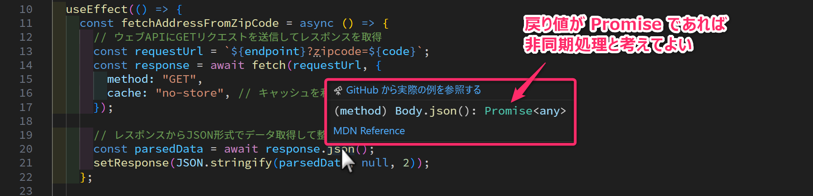
最後に、第11行目 で fetchAddressFromZipCode
をアロー関数形式で定義して、それを 第26行目 でコールするという (面倒な)
手続きをしているのは、useEffect
のなかには、非同期処理を直接書くことができない という仕様のためです。
4.6.1 演習 ( 5分)
次のように useEffect の第1引数として、async
キーワードを使った非同期関数を与えると、どのような警告やエラーが発生するか確認してください。
useEffect(async () => {
// ウェブAPIにGETリクエストを送信してレスポンスを取得
const requestUrl = `${endpoint}?zipcode=${code}`;
const response = await fetch(requestUrl, {
method: "GET",
cache: "no-store", // キャッシュを利用しない
});
// レスポンスからJSON形式でデータ取得して整形して表示
const parsedData = await response.json();
setResponse(JSON.stringify(parsedData, null, 2));
}, [code]);5 ブログ記事のデータをウェブから取得
ウェブAPIからJSONフォーマットのデータを取得し、それをオブジェクトに変換する処理について学んだので、これをブログアプリに適用してみたいと思います。ブログ記事の一覧がJSONフォーマットで取得可能なエンドポイントとして、以下を用意したので、これを利用していきます。
まずは、ブラウザからアクセスしてJSON形式で記事データが取得可能なことを確認してください。こちらには「投稿4」が追加されています。
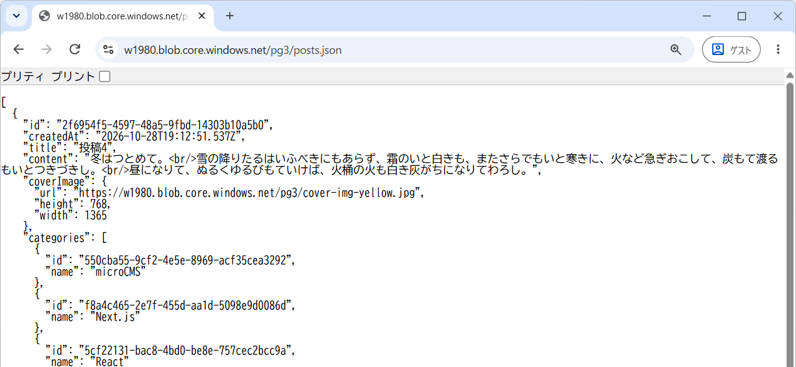
トップページ (src/app/page.tsx) の実装を次のように変更して、ウェブから記事を取得できることを確認してください。基本的には、ここまでに学んできたことの組み合わせになります。
"use client";
import { useState, useEffect } from "react";
import type { Post } from "@/app/_types/Post";
import PostSummary from "@/app/_components/PostSummary";
import { FontAwesomeIcon } from "@fortawesome/react-fontawesome";
import { faSpinner } from "@fortawesome/free-solid-svg-icons";
const Page: React.FC = () => {
const [posts, setPosts] = useState<Post[] | null>(null);
const [fetchError, setFetchError] = useState<string | null>(null);
useEffect(() => {
const fetchPosts = async () => {
try {
const requestUrl = "https://w1980.blob.core.windows.net/pg3/posts.json";
const response = await fetch(requestUrl, {
method: "GET",
cache: "no-store", // キャッシュを利用しない
});
if (!response.ok) {
throw new Error("データの取得に失敗しました");
}
const data = (await response.json()) as Post[];
setPosts(data);
} catch (e) {
setFetchError(
e instanceof Error ? e.message : "予期せぬエラーが発生しました",
);
}
};
fetchPosts();
}, []);
if (fetchError) {
return <div>{fetchError}</div>;
}
if (!posts) {
return (
<div className="text-gray-500">
<FontAwesomeIcon icon={faSpinner} className="mr-1 animate-spin" />
Loading...
</div>
);
}
return (
<main>
<div className="mb-2 text-2xl font-bold">Main</div>
<div className="space-y-3">
{posts.map((post) => (
<PostSummary key={post.id} post={post} />
))}
</div>
</main>
);
};
export default Page;実行すると次のような結果が得られると思います。
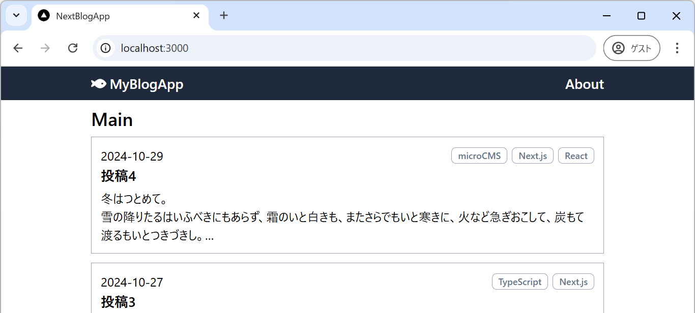
ここまでの実装で、このブログアプリに「閲覧者」としてアクセスしたときのフロントエンド処理の本質的な実装が概ね完了したことになります (ただし「投稿者」としてアクセスしたときのフロントエンドは、まだ実装できていません)。
6 microCMSを利用したバックエンドの構築
フロントエンド開発が一段落したので、次回の後期中間試験明けの講義からは Next.js を利用したバックエンド開発 を進めていきます。しかし、それに先立ってバックエンドの「役割」や「機能」について理解するために、ヘッドレスCMS である microCMS を使って、このブログアプリのバックエンド部分を構築してみたいと思います。
CMS とは Content Management System の頭文字をとったもので、ウェブを使ってコンテンツの作成・管理・公開ができるようなシステム全般を指します。
用途によって、ウェブサイト構築用のCMS ( WordPress が超有名!!)、教育用のCMS (Moodle や Google Classroom) 、コンテンツ共有プラットフォーム ( note、Zenn、Qiita、各種Wiki、各種ブログ) などに分類できます。いずれも通常の利用範囲ではプログラミングの知識は不要で、また専用ソフトも不要という特徴があります。
このなかで ヘッドレスCMS (Headless CMS) とは、コンテンツの「公開」や「閲覧」に関する部分についてビューやUIなどのフロントエンド機能を提供しないタイプのCMS、つまり コンテンツの閲覧・公開機能がAPIだけで提供 されるCMSと言えます。
microCMS は、このようなヘッドレス CMS に分類されるサービスになります。microCMS を利用すると、次のように 「ブログ投稿者」としての投稿記事の作成や編集 は microCMSのサイトで行なって、「閲覧者」としての投稿記事の取得 はウェブAPIで行なって「ビュー や UI は React を使って自分で自由にデザイン・実装する」という使い方が可能になります。
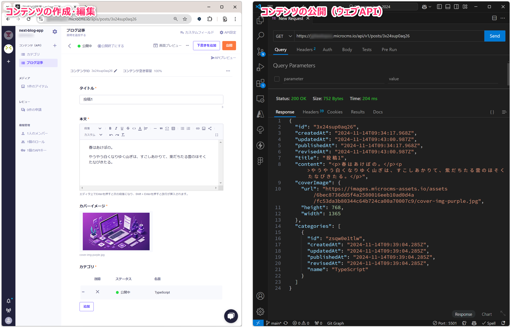
皆さんには、後期中間試験後にバックエンドについても Next.js で実装してもらいますが、microCMS などのヘッドレス CMS と連携すれば、現段階のフロントエンドの実装だけでも実用的なブログアプリとしてリリースすることができます。
6.1 microCMSの利用準備
microCMS を利用するための準備を行なっていきます。まずは microCMS にアクセスしてユーザ登録をしてください。クレジットカードの登録などは不要で、無料で登録することができます。
登録完了後、ログインしてサービス管理画面 ( https://app.microcms.io/ ) に移動してください。
次のような画面が表示された場合は「はじめる」を選択してください。以前に microCMS を利用したことがある場合、この画面は表示されません。
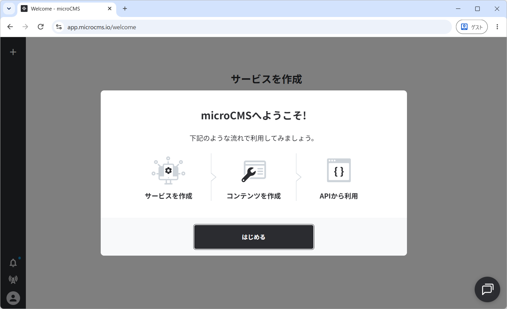
ブログ記事のコンテンツの作成・管理・公開のサービスを作成していきます。画面内の「＋追加」を押下してください。
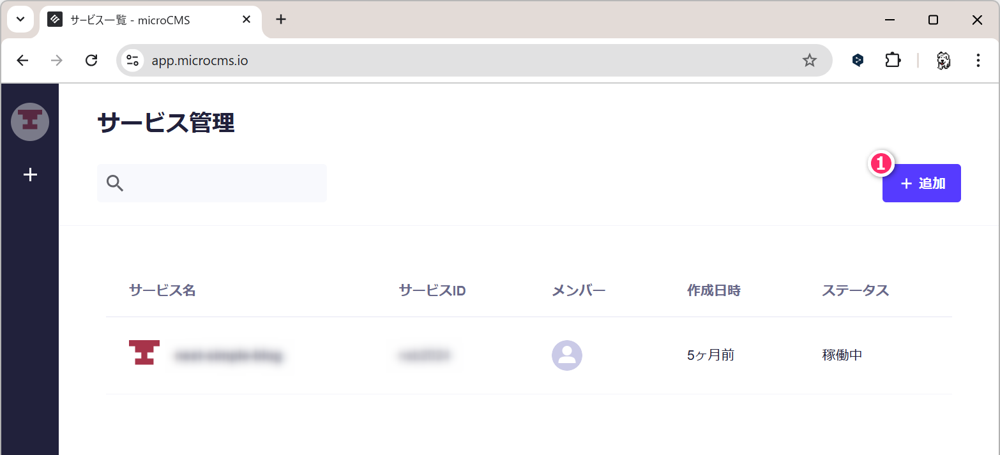
「1から作成する」を選択してください。
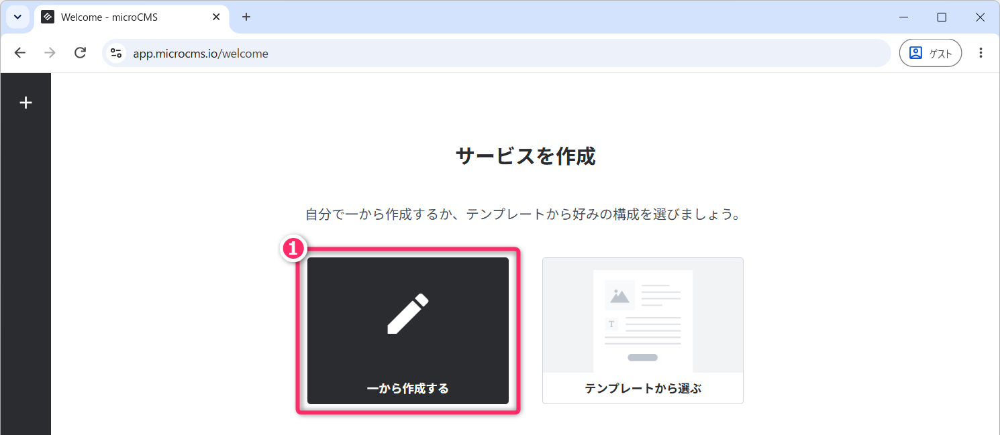
サービス情報として「サービス名」と「サービスID」を設定します。サービスIDについては、他のユーザが既に使用しているIDは使用できません。サービスIDは基本的には表側にはでてこない値なので、デフォルト値をそのまま使用することを推奨します。
- ここでは サービス名 は
next-blog-appと設定する想定で進めます。
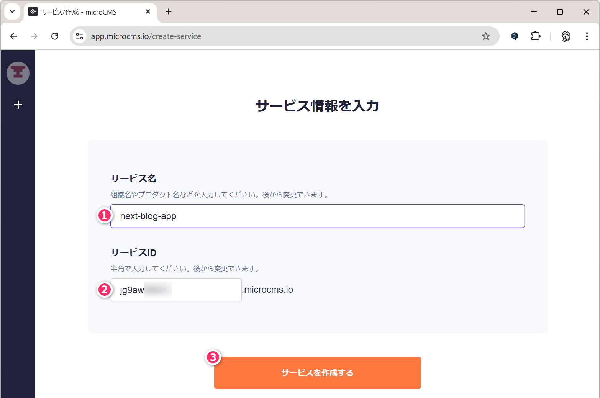
「サービスにアクセスする」のボタンを押下してください。
サービスのトップページ (https://[ServiceID].microcms.io/create-api)
に移動したら、「APIを作成」というページになっていることを確認して「自分で決める」を選択してください。
- もし「APIを作成」のページになっていなければ、左パネルの「コンテンツ (API)」の右隣の を押下して「＋新しいAPIを作成」の項目を押下してください。
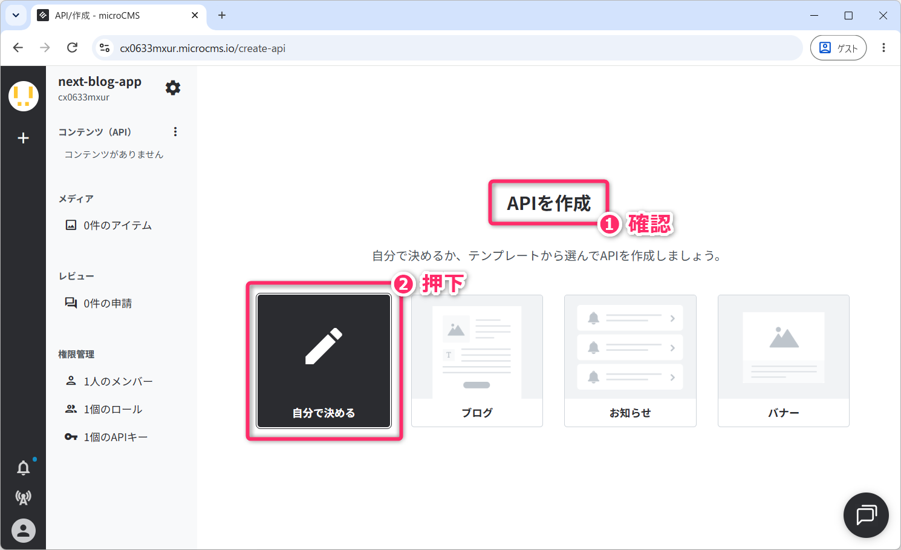
API管理用の名前 (API名)
と、そのAPIを利用するためのエンドポイント (URL)
を設定します。ここでは「ブログ記事の一覧を取得するためのAPI」を作成するので、エンドポイントは
posts
に設定します。完了したら、画面右下の「次へ」を押下します。
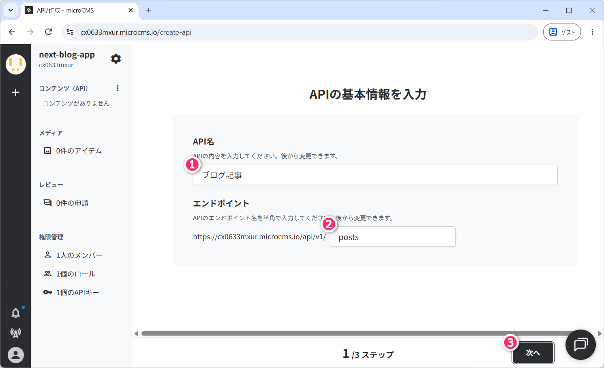
記事の「一覧」を取得するためのAPIを作成するので「リスト形式」を選択して、画面右下の「次へ」を押下します。
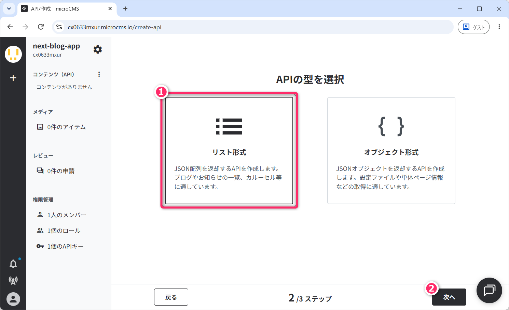
次に、APIのスキーマ (＝構造) を定義します。APIのスキーマとは、このAPIが返す 1 件のコンテンツ (ブログ記事) が どのような項目 (フィールド) を持つのかを定める型定義 のことで、フロントエンドの src/app/_types/Post.ts で定義した 「Post型」に対応 します ( 参照 )。
そこで、下図のように、Post型の
title、content、coverImage に対応する 3
つのフィールド を、次の内容で上から順に設定してください。
- 1 つ目: フィールドID は
title、表示名 はタイトル、種類 はテキストフィールド - 2 つ目: フィールドID は
content、表示名 は本文、種類 はリッチエディタ - 3 つ目: フィールドID は
coverImage、表示名 はカバーイメージ、種類 は画像
3 つとも「必須項目」をオンにしてください。
フィールドID は、APIのレスポンス (JSON)
のプロパティ名として、そのまま使われます。Post型のプロパティ名と、大文字・小文字も含めて完全に一致
するように入力してください。例えば coverImage を coverimage や
cover_image と入力すると、フロントエンドで post.coverImage
から画像を取得できなくなります。
一方で、表示名 は管理画面に表示されるだけの名前なので、自由に設定して構いません。
設定できたら、画面右下の「作成」を押下して確定してください。なお、画面上で説明されているように
id や createdAt
は自動的に作成されるので、ここで項目を作成する必要はありません。
また、カテゴリ ( categories )
については、あとのステップで追加します。
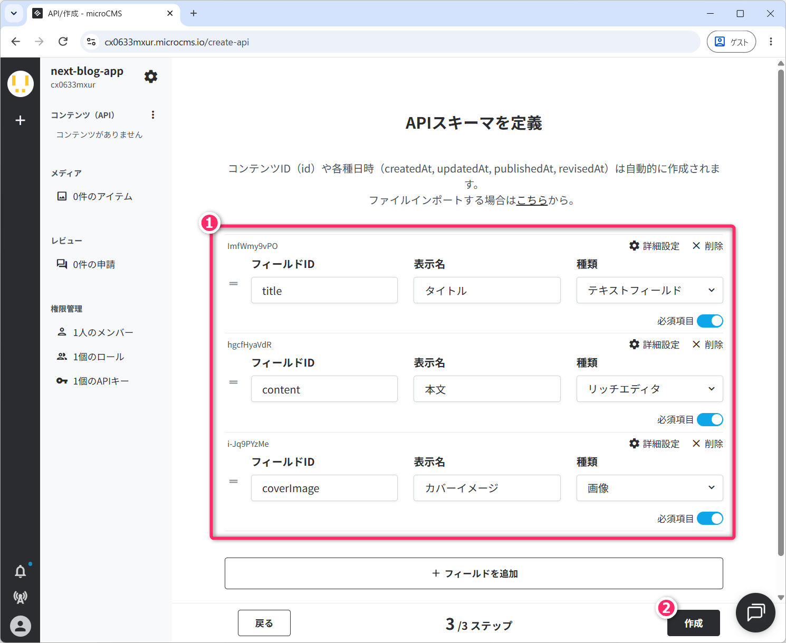
以上のAPIのスキーマ (構造) の設定で、利用準備が整いました。
6.2 microCMSにコンテンツを追加
ここからは、microCMSに コンテンツ、つまり、ブログの投稿記事 を追加していきます。次のように「ブログ記事」を選択して「＋追加」を押下してください。
- ブラウザの画面幅が狭いと、下図の ❷ の「＋追加」ボタンが隠れているので注意してください。
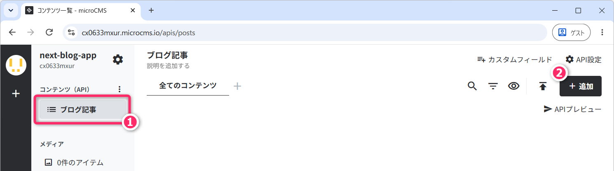
APIのスキーマ (構造) で設定した項目 (=タイトル、本文、カバーイメージ) の入力フォームが表示されるので、自由にコンテンツを作成してください (見本のとおりに入力する必要はありません)。
画像も自由に設定してください (画像のアスペクト比も特に気にする必要はありません)。適当な画像がなければ こちら を利用してください。

入力が完了したら右上の「公開」のボタンを押下してください。「コンテンツを公開します。よろしいですか？」というアラートが表示されるので「OK」を押下してください。
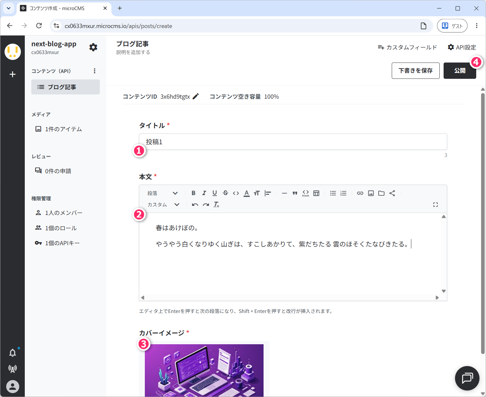
もし、以下のダイアログが表示されたら「APIプレビューを開く」のボタンを押下してください。
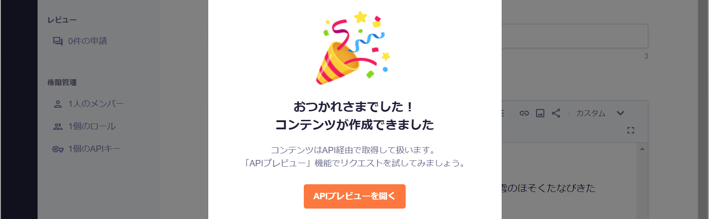
上記のダイアログが表示されなかったときは、次の操作で APIプレビュー を開いてください。
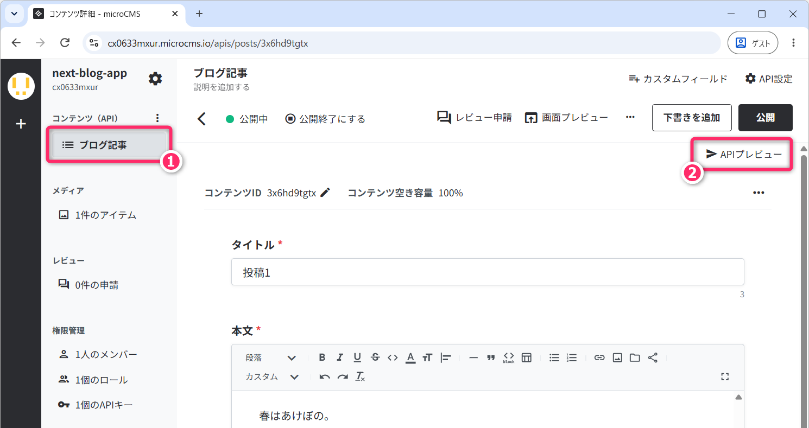
APIプレビューでは、このブログ記事を取得するためのAPIのエンドポイント (URL)
と、認証のためにHTTPリクエストの Header に付加しなければならない
X-MICROCMS-API-KEY の値が表示されます。基本的には X-MICROCMS-API-KEY
は 公開すべき値ではないので注意してください
(とはいえ、フロントエンドからHTTPリクエストを送るので、ちょっと工夫すれば覗けてしまう値ですが…)。
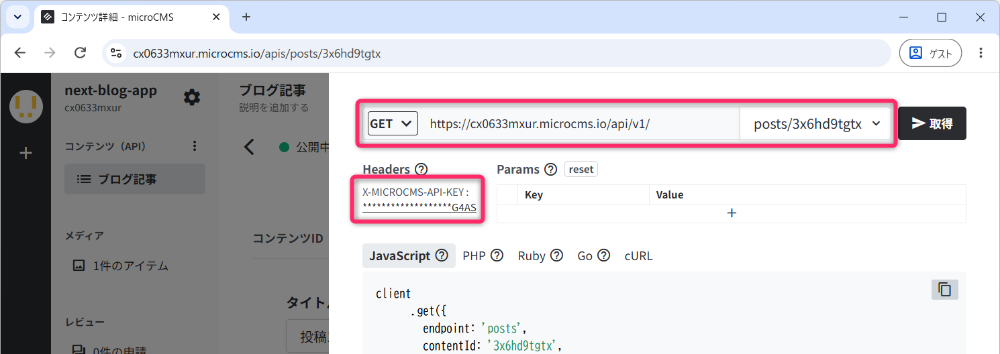
上記で「取得」のボタンを押下すると
https://xxxxxx.microcms.io/api/v1/posts/yyyyyy
というAPIエンドポイントで取得できる JSON の内容が確認できます。
このあとの作業で使用するので、サービスID と
X-MICROCMS-API-KEY (APIキー) の値、contentId
(投稿記事のID) の値を、適当なファイルにメモしておいてください。
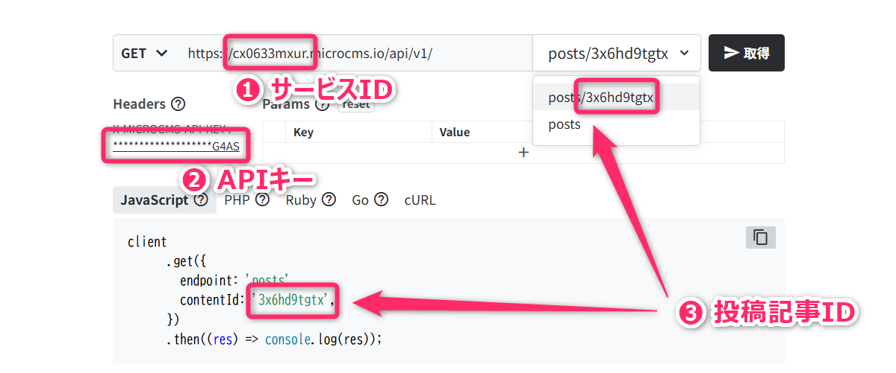
APIエンドポイントとはなんですか。
APIエンドポイントにアクセスする際には
X-MICROCMS-API-KEYを設定してください、と言われました。何が要求されていますか。
6.3 APIの利用テスト
さきほど作成した microCMS の APIエンドポイント に対して、実際に外部から「HTTP GET リクエスト」を送信し、JSON (＝投稿記事の内容) が正常に取得できるかどうかを確認していきます。
これは Chrome などのウェブブラウザからでも確認できそうですが、HTTPリクエストの
Header に X-MICROCMS-API-KEY
という項目でAPIキーを設定する必要があるため、ブラウザのアドレスバーにエンドポイントを入力するだけでは、APIの正常な応答が確認できません。
実際にウェブブラウザにエンドポイント
https://サービスID.microcms.io/api/v1/posts/
を入力してみてください。以下のような応答が返ってきます。
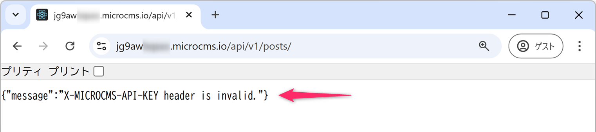
- もし、応答が
HTTP ERROR 404であった場合、サービスIDに誤りがあります。確認してください。
このようにウェブAPIは、ウェブブラウザでは十分にテストできないため、専用のツールを使用します。専用ツールとしては
curl や Postman など様々なものがありますが、ここでは VSCode の
httpYac (識別子 anweber.vscode-httpyac )
という拡張機能を利用していきます。
なお、個人開発などで、 既に他の RESTクライアントツール を使い慣れている場合は、それを継続で使用してください。httpYacを別途導入する必要はありません。
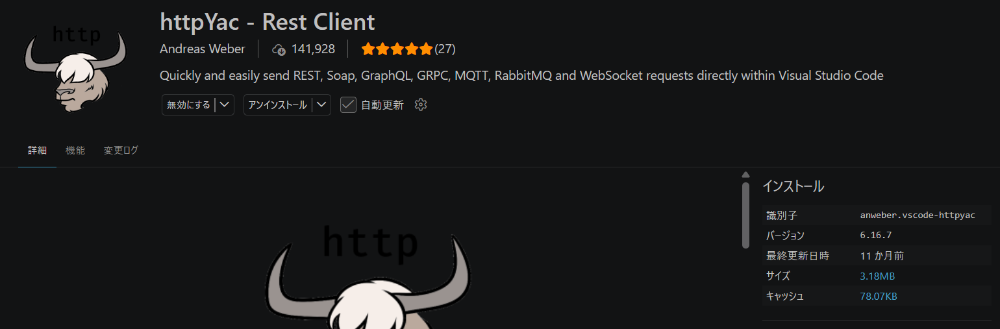
インストールが完了したら、プロジェクトフォルダのルートに、次のようなフォルダとファイルを新規作成してください。
📂 devtools/
└─ 📂 httpYac/
└─ MicroCMS.httpMicroCMS.http に次のような内容を記述して保存してください。なお、第03行目から第05行目 には、さきほどメモした値を設定してください。
# [Ctrl]+[Alt]+[R] で各セクションを実行
@service_id = xxxxxx
@api_key = zzzzzz
@post_id = yyyyyy
### 全投稿の取得
GET https://{{service_id}}.microcms.io/api/v1/posts
X-MICROCMS-API-KEY : {{api_key}}
### 単投稿の取得
GET https://{{service_id}}.microcms.io/api/v1/posts/{{post_id}}
X-MICROCMS-API-KEY : {{api_key}}MicroCMS.http は Git 管理の対象から外してください
MicroCMS.http には「APIキー」を記述するので、GitHub にプッシュされないように、Git 管理の対象から外します。プロジェクトフォルダ直下の .gitignore を開き、次の 2 行を末尾に追記して保存してください。
追記したら、git status (または VSCode の「ソース管理」の画面)
で、devtools フォルダが変更の一覧に表示されないことを確認してください。
なお、すでに MicroCMS.http をコミットしてしまった場合は、あとから .gitignore に追記しても除外されません。必ず、最初のコミットの前に追記してください。
ファイルを保存したら、まずは「全投稿の取得」のセクションの
send のボタン (下図参照) を押下してください
(あるいは、当該セクションにカーソルがある状態で [Ctrl]+[Alt]+[R]
を押下してください)。
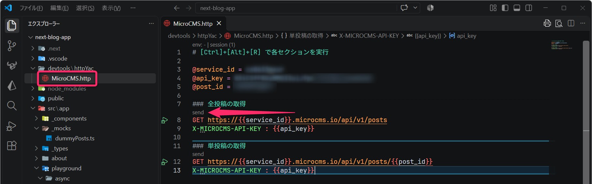
これにより、指定のエンドポイントに HTTPリクエスト が送信されて、HTTPレスポンス が返ってきます。
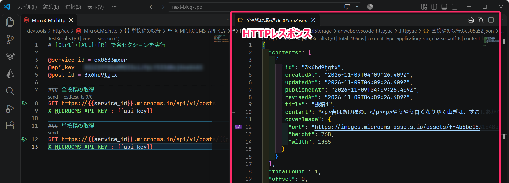
このレスポンスが、次のような JSON
フォーマットのデータになっていることを確認してください。特に contents が Post[] に対応する値
になっていることに注意してください (あとで利用することになります)。
{
"contents": [
{
"id": "yyyyyy",
"createdAt": "2026-11-13T09:37:22.652Z",
"updatedAt": "2026-11-13T09:37:22.652Z",
"publishedAt": "2026-11-13T09:37:22.652Z",
"revisedAt": "2026-11-13T09:37:22.652Z",
"title": "投稿1",
"content": "<p>春はあけぼの。</p><p>やうやう白くなりゆく...</p>",
"coverImage": {
"url": "https://images.microcms-assets.io/assets/zzzz/xxxx/cover-img-purple.jpg",
"height": 768,
"width": 1365
}
}
],
"totalCount": 1,
"offset": 0,
"limit": 10
}また、このレスポンスから、microCMSにアップロードした画像は
https://images.microcms-assets.io/assets/...
に配置されることが分かります。この画像は、カバーイメージとして記事詳細のページのなかで読み込む予定なので
next.config.ts のなかに「画像読込みを許可するサイト」として
images.microcms-assets.io を追加しておいてください。
import type { NextConfig } from "next";
const nextConfig: NextConfig = {
cacheComponents: false,
devIndicators: false,
turbopack: {
rules: {
"*.css": {
loaders: ["@tailwindcss/turbopack"],
as: "*.css",
},
},
},
images: {
remotePatterns: [
{ protocol: "https", hostname: "placehold.jp" },
{
protocol: "https",
hostname: "avataaars.io",
},
{ protocol: "https", hostname: "w1980.blob.core.windows.net" },
{ protocol: "https", hostname: "images.microcms-assets.io" }, // ◀ 追加
],
},
};
export default nextConfig;さらに、レスポンスが表示されているタブの上部の HTTP/1.1 200 - OK
の部分をクリックすると…
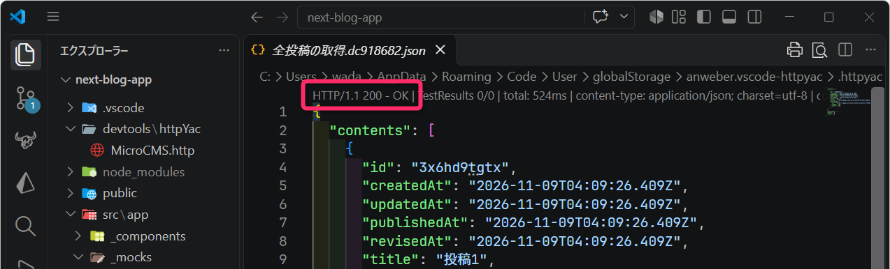
バックグラウンドで送受信された生の「HTTPリクエスト」と「HTTPレスポンス」をヘッダを含めて確認することができます。
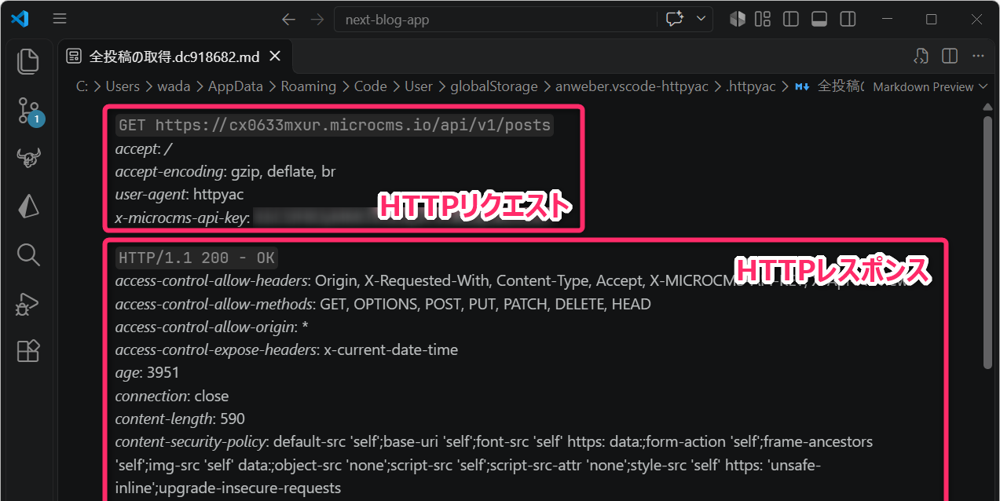
- ウェブAPIについて勉強しているのですが、HTTPリクエストって「文字列」なんですか？
6.3.1 演習 ( 8分)
MicroCMS.http の
### 単投稿の取得のセクションから、「投稿記事 (単体) のデータ」が取得できることを確認してください。MicroCMS.http の
@service_id、@api_key、@post_idに誤りがあると、それぞれ、どのようなレスポンスになるか実際に確認してください。@service_idに誤り 👉 404 - Not Found@api_keyに誤り 👉 401 - Unauthorized@post_idに誤り 👉 404 - Not Found
6.4 カテゴリの追加
つづいて microCMS に「カテゴリ」を作成して、さきほどの「ブログ記事」の属性として設定できるようにしていきます。左パネルの「コンテンツ (API)」の右隣の を押下して「＋新しいAPIを作成」の項目を押下してください。さらに、APIを作成の「自分で決める」のボタンを押下してください。
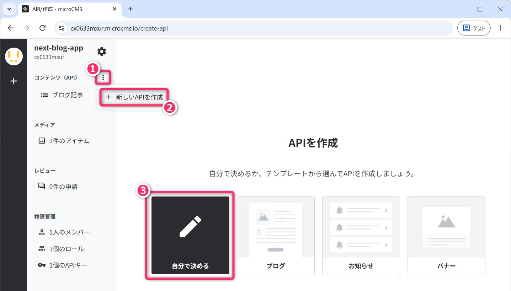
次のように設定してください。投稿記事のときもそうでしたが、データの配列を取得するエンドポイントは
categories のように 複数形
にすることが一般的になります。設定できたら画面下部の「次へ」を押下してください。
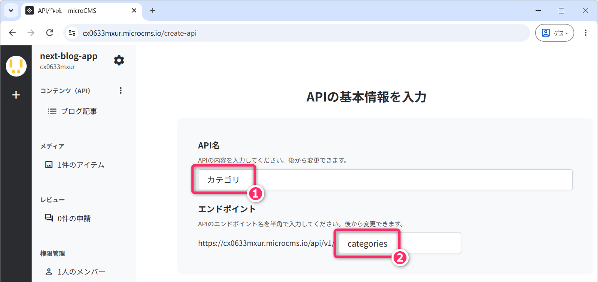
「リスト形式」を選択してください。設定できたら画面下部の「次へ」を押下してください。
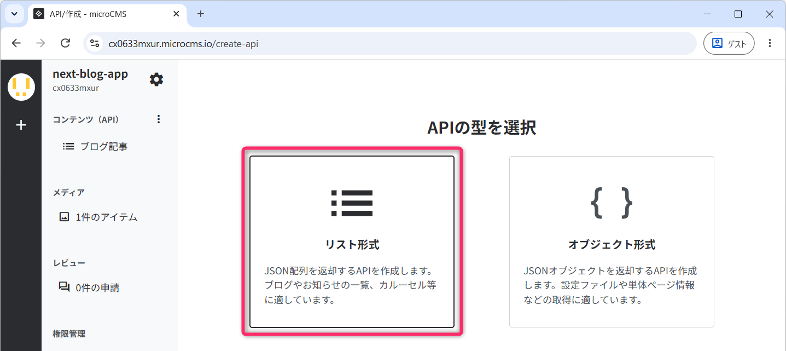
次のようにカテゴリAPIのスキーマ (構造) を定義します。これは src/app/_types/Category.ts で定義した 「Category型」に対応させるように設定 していきます。設定できたら画面右下の「作成」を押下して確定します。
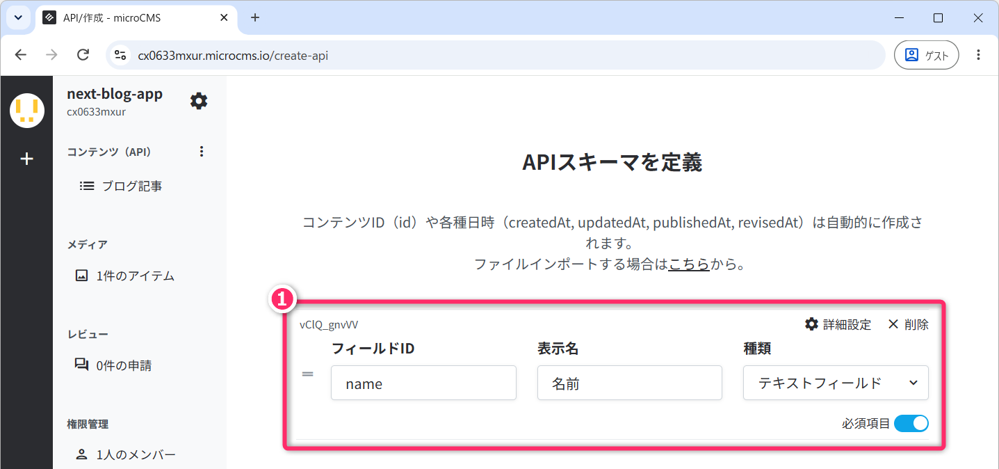
作成したフィールドに、実際にカテゴリのコンテンツ (TypeScript や
React など) を追加していきます。
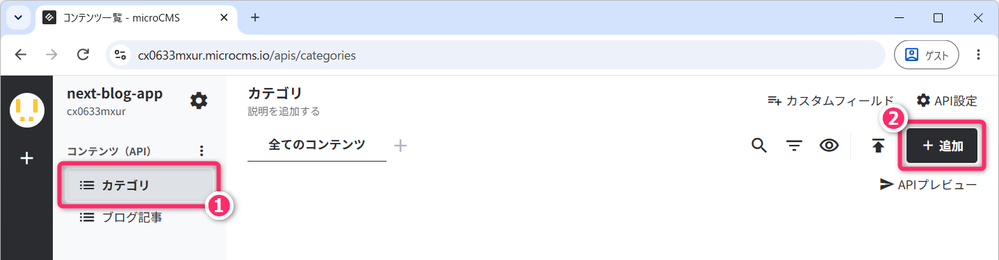
とりあえず、適当に 2 個ほどカテゴリに設定する値 (TypeScript や
React など) を自由に追加してください。
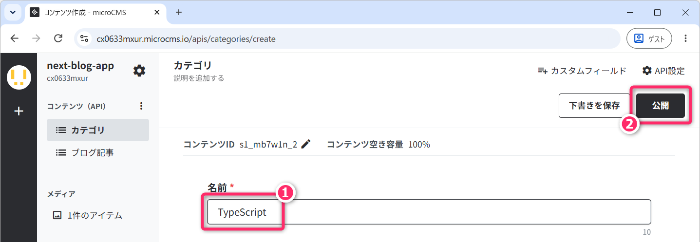
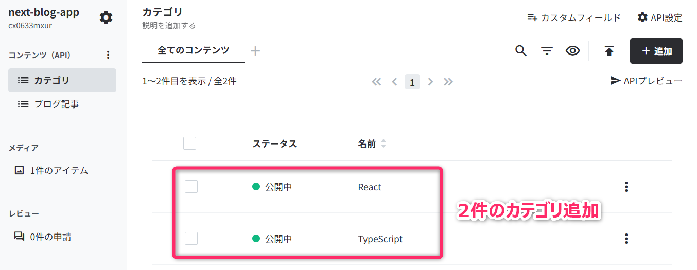
「ブログ記事」の属性として、「カテゴリ」を設定できるようにAPIスキーマ (構造) を変更していきます。画面から「ブログ記事」を選択して、「API設定」を選択してください。
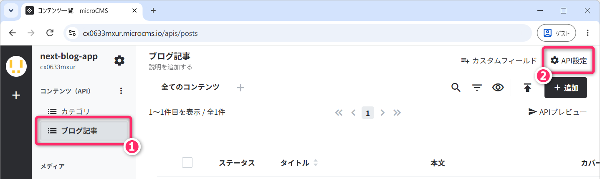
「APIスキーマ」を選択して、「＋フィールドを追加」を選択してください。
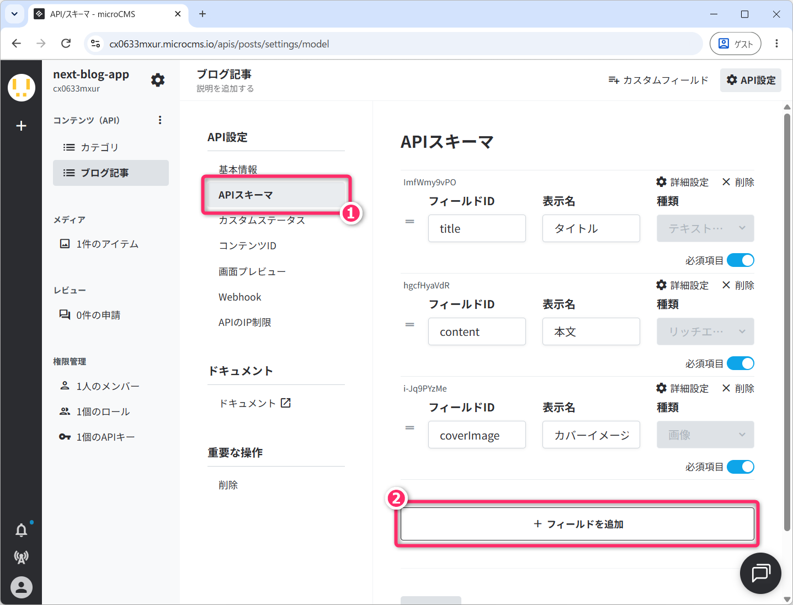
次のように設定してください。ひとつの「ブログ記事」に複数個のカテゴリが設定できるように、「種類」の設定値は「複数コンテンツ参照」としてください。
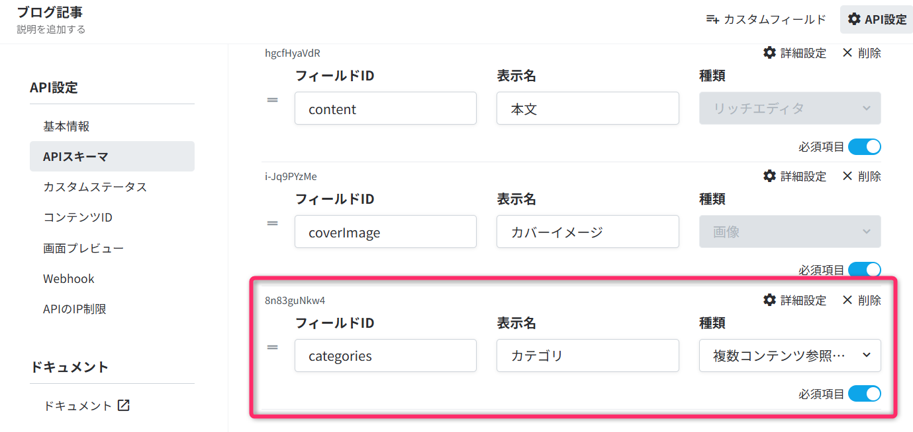
次のダイアログが表示されるので Categories
を選択して「決定」を押下してください。
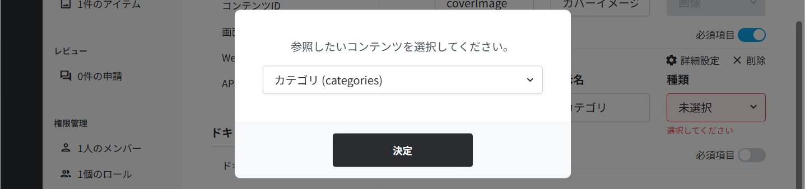
ダイアログが閉じて元の設定画面に戻るので「変更する」を押下します。さらに、次のような確認ダイアログが表示されるので、画面の指示に従って「変更する」を実行してください。
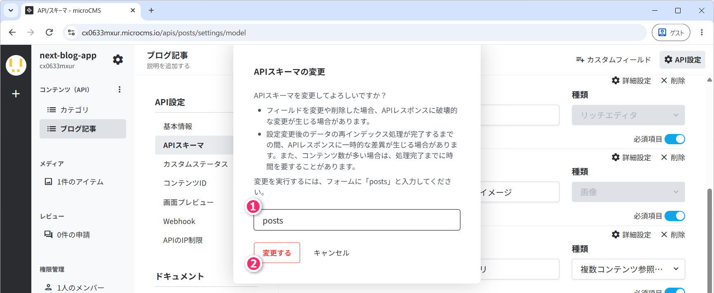
以上で設定が完了です。
作成済みの「ブログ記事」に「カテゴリ」の属性を設定していきます。左パネルの「ブログ記事」から、さきほど作成したブログ記事 (ステータスが「公開中」になっているもの) を選択して編集モードに切り替え、次の図のようにカテゴリの「追加」ボタンを押下してください。
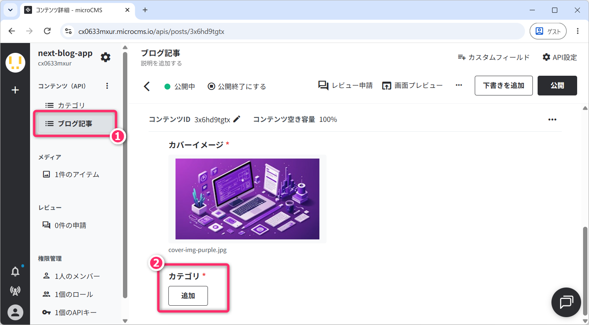
任意のカテゴリを選択して、「公開」のボタンを押下してください。
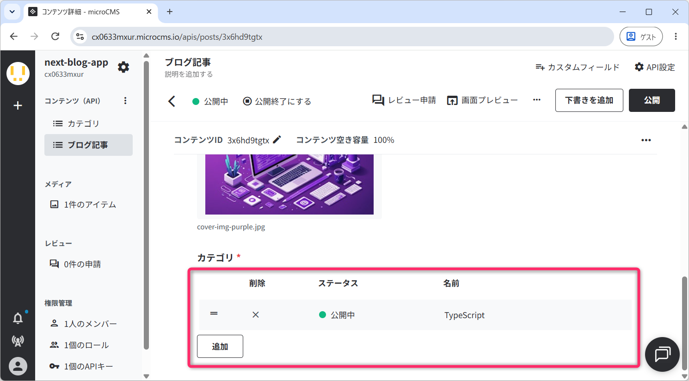
以上で、ブログ記事にカテゴリが設定できました。
httpYac を使って https://[ServiceID].microcms.io/api/v1/posts/
からデータを取得して、そのデータにカテゴリが含まれていること
を確認してください。
6.4.1 演習 ( 5分)
エンドポイント https://[ServiceID].microcms.io/api/v1/categories/
から「カテゴリ一覧」が取得できることを確認してください。
- MicroCMS.httpの記述例
- まずは、自分で記述してから参照してください。
7 ブログアプリとmicroCMSの連携
microCMS (ウェブAPI) からブログ記事データを取得し、それを表示するように Next.js で開発しているブログアプリを変更していきます。
7.1 準備: 環境変数の設定
httpYac を使って実験したように、microCMS の API を利用するためには 「APIキー」 が必要となります。
一般に、このような APIキー や データベースの接続文字列、パスワード などの認証情報をハードコーディングすること (=プログラムのソースコードに直書きすること) は NG行為 となっています。これは Git/GitHub のコミット履歴やリポジトリを通じて、認証情報が意図せず公開されてしまう可能性があるため です。
先のセクションで取得した APIキー は (設定を変更しない限りは) 以下のようにブログ記事の GET (READ) 権限のみ を持つ設定となっているため、大して問題にはなりませんが、編集や削除といった権限を持ったAPIキーが流出・漏洩すると不正利用され実害が生じます。
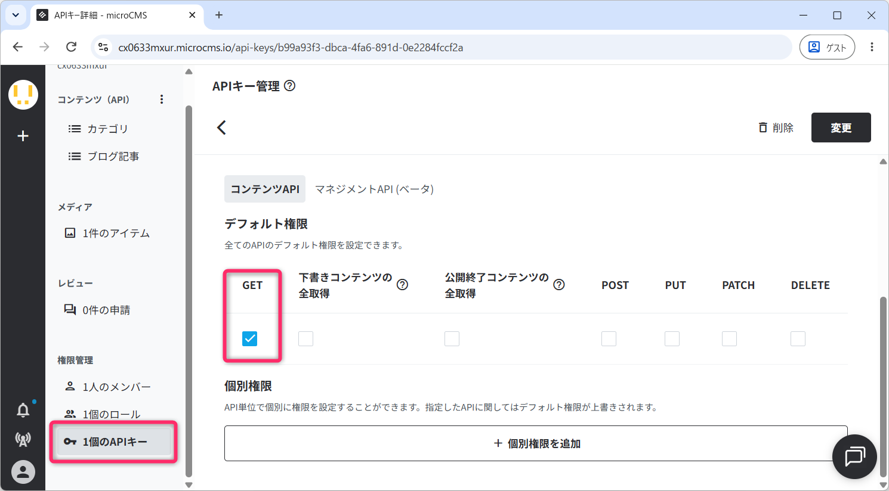
そこで、一般に認証情報などは 環境変数 に格納して管理することが推奨されています。環境変数とは OSやシェル環境で設定される変数のことで、プログラムから参照することができます。環境変数を利用する方法には、以下のようなメリットがあります。
- セキュリティの向上：認証情報をソースコードから分離できる
- 柔軟な管理：開発環境と本番環境で異なる値を設定できる
- 安全な共有：チーム開発時もソースコードのみを共有できる
注意
ここでは、フロントエンドのプログラムで「APIキー」を参照します。フロントエンドプログラムはブラウザで実行されるため、たとえ環境変数に設定したAPIキーであっても、デベロッパーツールを使うと簡単に値 (APIキーの文字列) を取得できてしまいます。
そのため、フロントエンドで使用するAPIキーには、参照 (GET) 権限のみを付与し、編集・削除などの権限は与えないように注意してください。逆に言えば、編集・削除などの権限を持ったAPIキーは バックエンドのみで使用 するようにしてください。
Next.js の開発では環境変数の設定に .env
ファイルを利用します。このファイルは .gitignore
に追加し、Gitによるバージョン管理から除外します。既に 前回講義 で .gitignore に
.env* を設定済みですが、再度、確認してください。
確認ができたら、プロジェクトフォルダの直下に .env
というファイルを作成して、以下の設定を記述して保存してください。XXXXX
にはサービスID、YYYYY には APIキー を記述してください
(ダブルクォーテーションで囲む必要はありません)。通常、環境変数は
アッパースネークケース で名前をつけます。
# から始まる行はコメント扱いとなります。=の前後にスペースを入れると予期しない動作
を引き起こす可能性があります。
# microCMS
NEXT_PUBLIC_MICROCMS_BASE_EP=https://XXXXX.microcms.io/api/v1
NEXT_PUBLIC_MICROCMS_API_KEY=YYYYYここでは、必ず NEXT_PUBLIC_
というプレフィックスを付けてください。NEXT_PUBLIC_
を付けていない環境変数は、フロントエンドのプログラムでは参照できません。逆に言えば、利用者に知られて困る環境変数 には NEXT_PUBLIC_
を付けないようにしてください。
なお、環境変数は、プログラムからは次のように参照できます。
なお、この際、apiKey は string | undefined 型になります
(当該の環境変数が存在しない場合は apiKey は undefined
となります)。
7.2 ブログ記事一覧の表示
microCMS からデータを取得するために src/app/page.tsx を次のように変更してください。変更後は、ホットリロードが機能しない場合があるので、そのときは、ブラウザで再読み込みを実行してください。
"use client";
import { useState, useEffect } from "react";
import type { Post } from "@/app/_types/Post";
import PostSummary from "@/app/_components/PostSummary";
import { FontAwesomeIcon } from "@fortawesome/react-fontawesome";
import { faSpinner } from "@fortawesome/free-solid-svg-icons";
const Page: React.FC = () => {
const [posts, setPosts] = useState<Post[] | null>(null);
const [fetchError, setFetchError] = useState<string | null>(null);
// 環境変数から「APIキー」と「エンドポイント」を取得
const apiBaseEp = process.env.NEXT_PUBLIC_MICROCMS_BASE_EP!;
const apiKey = process.env.NEXT_PUBLIC_MICROCMS_API_KEY!;
useEffect(() => {
const fetchPosts = async () => {
try {
// microCMS から記事データを取得
const requestUrl = `${apiBaseEp}/posts`;
const response = await fetch(requestUrl, {
method: "GET",
cache: "no-store",
headers: {
"X-MICROCMS-API-KEY": apiKey,
},
});
if (!response.ok) {
throw new Error("データの取得に失敗しました");
}
const data = await response.json();
setPosts(data.contents as Post[]);
} catch (e) {
setFetchError(
e instanceof Error ? e.message : "予期せぬエラーが発生しました",
);
}
};
fetchPosts();
}, [apiBaseEp, apiKey]);
if (fetchError) {
return <div>{fetchError}</div>;
}
if (!posts) {
return (
<div className="text-gray-500">
<FontAwesomeIcon icon={faSpinner} className="mr-1 animate-spin" />
Loading...
</div>
);
}
return (
<main>
<div className="mb-2 text-2xl font-bold">Main</div>
<div className="space-y-3">
{posts.map((post) => (
<PostSummary key={post.id} post={post} />
))}
</div>
</main>
);
};
export default Page;第13行目 と 第14行目
では、環境変数からの値の読込みを行なっています。末尾の ! は、Non-null
assertion operator といって この値は必ず存在する
(undefinedやnullではない)
ということをコンパイラに明示的に伝えるための演算子になります。この !
を付けることで apiKey と apiBaseEp
は「string型」となりますが、付けないと「string |
undefined型」となってしまいます。これらの値が「string |
undefined型」だと、後続のコードで型互換性のエラーが発生するため、ここでは !
を付けています。
実際に apiKey の !
を外して、どこで型互換性の問題が発生するかを確認してください。
第21行目 から 第27行目 では、microCMS (ウェブAPI) からの
データフェッチ を実行しています。fetch
に与える第2引数のオブジェクトに headers 属性を設定することで HTTPリクエストに任意のヘッダを追加すること ができます。
第31行目 の const data = await response.json()
では、HTTPレスポンスをオブジェクトに変換して data
に格納しています。なお、HTTPレスポンスのボディ部が
JSONフォーマットではない場合に (例えば
CSV形式や、その他形式の場合に).json()
メソッドを使用すると例外が発生するので注意してください。また、json() は 非同期メソッドなので await を付けること
を忘れないようにしてください。
httpYac を使って事前確認したように、https://[ServiceID].microcms.io/api/v1/posts/
のレスポンスそのものは Post[] ではありません。レスポンスのなかの
contents に Post[]
に相当する情報が格納されています。そのため、第32行目 では
setPosts(data.contents as Post[])
のようにしています。なお、as Post[] は省略可能です。
以上、動作確認をしてください。なお、開発モードでアプリを立ち上げた直後は、(動的なコンパイル処理の関係で) 高確率でフェッチ処理に失敗するので (=「Loading…」から進まないことがあるので)、その場合は ブラウザをリロード してください。なお、本番環境では、この問題は生じません。
7.2.1 演習 (宿題: 40分)
記事詳細のページについても、トップページと同様に microCMS からデータを取得して表示できるように実装しておいてください。
https://[ServiceID].microcms.io/api/v1/posts/[投稿記事のid]のエンドポイントを利用してください。- 画像の取得に失敗するときは next.config.ts の設定を確認してください。
- 実装できたら
npm run lintを実行して、エラーが出ないことも確認してください。 - どうしても実装できないときはこちら を参照してください。